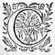
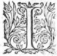
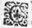
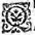

LE
QUATRIESME
LIVRE DE
LA
TROISIESME
TROISIEME
PARTIE
de l'ASTREE
de Messire Honoré d'Urfé.
Éd.
Éd. de 1619, 118 verso sic 116 verso.
ALcidonpressé du cruel souvenir de ses peines passees, et de l'outrage qu'il luy sembloit d'avoir receu en ceste occasion et de son Maistre et de sa Maistresse, perdit la parole, de sorte que quand apres s'estre teu quelque temps, il la voulut reprendre, la voix ne luy permit pas, et falutfallut
que par force il demeurast un assez long espace de temps sans parler. Enfin s'efforçant, il dit à toute peine : - Vous voyez, Madame, comme pour vous obeyrobeïr , je suis allé renouvellant mes playes,
avec tant de desplaisir, que si celuy-cy n'esgale par sa grandeur celuy que je receus quand ce desastre m'advint, il le surpasse pour le moins par sa longueur, puis qu'il ne sera jour de ma vie que je ne pleigne la cruelle et desastreuse fortune que j'eus en ce temps-là, car veu la cruauté dont vous usez envers moy, je n'espere plus en pouvoir perdre le souvenir que par la perte de ma vie ; ce m'est toutesfoistoutefois quelque espece de contentement parmy la douleur que ce souvenir m'a rapportée, quand je pense que je laη reçois par vostre commandement, et pour avoir obey à ce que vous m'avez ordonné : Mais si vostre rigueur n'est plus grande encore que ma patience, et si vous pouvez estre esmeue de quelque compassion, soulagezallegez moy, je vous supplie, Madame, d'une partie de ce fardeau que vous m'avez imposé, je veux dire de continuer ce discours de mes malheurs, et desquels vous pourrez parler avec plus d'asseurance, puis que le personnage que je fais en tout ce qui me reste à dire, c'est seulement de souffrir ce qu'il vous a pleu me faire endurer : Et si vous avez eu quelque raison de vouloir que le sage Adamas aprit de ma bouche la verité des chosesη que j'ay faites, il me semble que je ne vous fais pas une requeste desraisonnable, quand je vous supplie que par vos paroles aussi, il puisse entendre ce qui est procedé de vous entierement. Adamas, sans attendre la responce de Daphnide, se tournant vers elle, - Il me semble, Madame, luy dit-il, que ce Chevalier a raison, et que par l'ordonnance mesme que vous luy avez faite, vous y
estes obligee :
- Mon pere, respondit-elle, la loy n'est pas égale entre luy et moy, toutesfoistoutefois puis que vous le trouvez bon, je feray tout ce qu'il vous plaira, aussi bien ay-je recogneu, qu'encoresencore
qu'il
die la verité, si est-ce que comme les "
bons Orateurs, il ne laisse de
lascher tousjours "
quelque parole à l'avantage de sa cause, et lors "
apres estre demeureedemeuré
muette quelque temps, elle reprit ainsi le discours.

C'EST avec beaucoup de raison "
qu'on a tousjours dit, que ceux "
qui sont interessez ou preocupez "
de quelque passion, ne peuvent estre "
Jugesjugez bien equitables, "
d'autant que le jugement "
estant offencé, il ne peut faire ses fonctions parfaites, non plus qu'un bras ou une jambe qui est blessee de quelque grand coup. Alcidon en rend un bon tesmoignage par les consequences qu'il a tireesjugemens qu'il a faits si souvent à mon desavantagedesadvantage , plus porté de la passion que de la raison qu'il s'en figure, et parce que mon discours seroit trop long, si je voulois reprendre tous les poinctspoints où il s'est laissé transporter, je ne m'y arresteray pas, mais seulement diray avec verité ce qui reste de nostre fortune, et laisseray à vostre jugement de discerner
sa passion d'avec la verité. Et pour reprendre ce propos où il l'a laissé, je vous diray, mon pere, qu'ayant receu la lettreη qu'il m'avoit envoyee, et à laquelle je ne peus faire responce, parce que celuy qui me l'avoit apportee s'en estoit retourné par son commandement, sans me dire Adieu. Je demeuray la personne du monde la plus desolee, me voyant blasmer avec quelque apparence de raison, d'une chose à laquelle je ne pouvois guere remedier. J'appris incontinent apres par des lettres du Roy, tous les discours qu'ils avoient eus ensemble, et puis par Alizan, que j'y avois envoyé expres (sans toutesfois luy escrire) quel estoit son mal, et combien on le jugeoit dangereux. Je demeuray longuement à discourir en moy-mesme sur ce que j'avois à faire : car d'un costé l'affection que je luy portois me convioit d'aller où il estoit pour luy faire entendre combien il estoit abusé, et de l'autre, je n'osois l'entreprendre de peur d'estre blasmee. Je fus longuement irresoluë avant que de pancher entierement d'un costé, et enfin le second voyage qu'Alizan y fit me contraignit par son retour de m'y en aller, parce qu'il me rapporta de si mauvaises nouvelles de sa maladie, que mettant à part toute autre consideration, je me resolus de l'aller voir, et en cette deliberation, je commençay de chercher quelque excuse à mon voyage. Elle se presenta assez bonne bien tost apres, parce que la paix estant faictefaite , mon beau-frere fut contraint d'aller en Avignon pour r'avoir l'un de ses parens qui avoit esté faictfait prisonnier dans une ville qui s'estoit
renduë au grand Euric, et parce qu'il avoit voulu contredire à cette resolution generale, ceux du lieu s'en estoient saisis, et encore que la paix fut depuis publiee, si est-ce qu'ils ne le vouloient point remettre en liberté, de peur que si la guerre recommençoit, il ne fist quelque entreprise sur eux, et prevoyant qu'il y auroit de la difficulté a son eslargissement, parce qu'il jugeoit bien que le Roy à son jugement aymeroit mieux favoriser ceux qui avoient pris volontairement son party, et que l'affaire par consequent pourroit prendre un long trait de temps, il voulut y mener sa femme, et elle le pria de faire en sorte que je l'y voulusse accompagner, tant pour faciliter son entreprise, que pour estre accompagnee quand elle seroit contrainte de parler au Roy. Soudain que le mary m'en ouvrit la bouche, ayant opinionjugeant bien que c'estoit le plus honorable pretexte que je pourrois prendre, je luy promis de faire tout ce qu'il voudroit, et qu'il falloit seulement avoir le congé de ma mere : la bonne femme le luy accorda sans difficulté aussi tost qu'il luy en fit entendre le subjectsujet , de sorte que deux jours apres nous partismes, et de fortune, nostre logis se rencontra vis à vis de celuy d'Alcidon. Le bruit de son mal estoit fort grand, et le Roy l'alloit voir fort souvent, parce que veritablement il l'aymoit :aimoit mais quand il fut adverty de mon arrivee, pour avoir la commodité de me voir, il se monstra encore plus desireux de sa santé : car au lieu qu'il ne le voyoitvoioit qu'une ou deux fois la sepmaine : depuis il y alla tous les jours, et ou allant ou venant, il passoit d'ordinaire en mon logis. Quant
à moy, le lendemain que je fus arrivéarrivée , j'envoyayenvoiay vers Alcidon, et luy manday par Alizan, que s'il l'avoit agreable je le verrois volontiers, et soudain que j'eus sa responce, je m'y en allay. Je le trouvay fort mal, et pour lors sa chambre estoit pleine de Mires et de Medecins ; de sorte que pour cette fois nos discours ne furent que de sa maladie : à quoy il respondoit fort peu, et tousjours en souspirant, il est vray que son mal couvroit cela, parce qu'on pensoit que c'estoit l'ardeur de la fievre. Le jour d'apres, je pris le temps si à propos, que je le trouvay presque seul, et lors m'aprochant de luy, apres luy avoir demandé en quel estat il se trouvoit, il me respondit avec les larmes aux yeux, et d'une voix assez foible et languissante : - Et comment, Madame, me demandez vous l'estat du mal que vous m'avez faict, vous le devez mieux sçavoir que moy, ni que tous mes Medecins ? - Alcidon, luy respondis-je froidement, il est certain, que je sçay une partie du mal de vostre *esprit :ame mais je suis fort ignorante de celuy du corps, et c'est celuy-là qui me met en peine : car pour l'autre, quand vous voudrez m'escouter, je m'asseure que vous en serez bien tost guery. - Ah Daphnide ! me dictdit -il avec un grand souspir, je voy bien que s'il est ainsi, vous avez plus de soucy de ce qui le merite le moins : car s'il y a quelque chose en moy qui puisse estre recommandable, c'est cetteceste ame avec laquelle je ne vous ay pas seulement aymeeaimée , mais adoree d'une si pure et entiere affection, que je ne croy pas qu'autre que vous la
peut jamais mespriser. - Cette responce, repris-je, est un tesmoignage de vostre mal, mais ayez seulement le soucy que vous devez avoir de la guerison du corps, et vous verrez que pour l'ame, le mal n'en est pas mortel, si pour le moins il vous est encore resté quelque peu de raison.
- Je sçay, me respondit-il, que le mal n'en est pas mortel : car s'il l'estoit, il y auroit quelque esperance de le voir finir un jour, et je suis tres-asseuré qu'il durera autant que mon ame, que nos Druides m'ont enseigné estre immortelle : mais si est bien celuy du corps, puis que s'il ne s'augmente comme je desire, j'avanceray de mes propres mains le terme de ma vie, affinafin de n'avoir plus des yeux d'amour pour voir une personne qui en a si peu dans l'ame.
- Je voy bien, repliquay-je, que vous estes blessé, et que vostre plus grand mal gist en l'opinion, vous croyez que la recherche du grand Euric a eu tant de pouvoir sur moy, qu'elle m'a faictfait effacer l'affection que je vous ay promise. N'est-ce pas cela vostre mal, Alcidon, vous semblant d'avoir une tres-juste occasion de vous douloir de moy, et de vostre fortune, qui vous a fait aymeraimer une personne volage et inconstante ? Il me respondit alors froidement, - Si vous sçavez aussi bien guerir, que recognoistre mon mal, j'avoüeray que vous estes un tres-bon Medecin.
- Il m'est plus aisé, luy respondis-je, de le guerir, qu'il ne m'a esté
de le
recognoistre,
parce que l'ame est difficilement "
descouverte quand elle veut, et ç'a esté par hazard "
que j'ay
tiré cetteceste cognoissance de vos paroles, au lieu qu'à vostre guerison la raison et la verité
m'ayderontaideront ; Et pour commencer, dites moy, Alcidon, à quoy avez vous recogneu que je ne vous aymoisaimois plus ? N'est-ce point aux responces que j'ay faictesfaites au Roy, et que j'ai souffert d'estre veue et recherchee de luy ? Mais despoüillez-vous un peu de passion, et sans avoir aucun interest en cecy, considerez qui est le Roy
Euric, qui je suis, et en quelle saison nous sommes : vous verrez qu'Euric est un Prince qui peut tout ce qu'il veut, et à qui les Citez, ny les Provinces, voire ny les Royaumes entiers n'ont peu faire jusques icy resistance, quand son ambitionη
luy a faictfait tourner ses armes contr'contre eux ; et croyez-vous qu'Amour soit une moins forte passion, ou que j'aye plus de pouvoir de resister à sa force, que tant de milliers de personnes ? Vous sçavez que je suis sa sujettesubjette , que je suis et demeure dans le païs de sa conqueste, et en une saison où il semble que toutes choses soient permises, me croiriez vous bien avisee de le desdaigner et de le rejetter ? Penseriez vous vous mesme de vivre et de demeurer pres de luy, ou dans ses Estats avec asseurance, s'il voyoit que je le traitasse de cette sorte, sçachant par vostre bouche l'amour que je vous porte, laquelle il accuseroit de tout le mauvais traitement qu'il recevroit de moy ? Est-il possible que vostre passion vous aytait de sorte aveuglé, que vous n'ayez peu voir ce que ce seul
remede estoit celuy qui me pouvoit donner le moyen de vous voir ? En quoy ne se change
" point unune Amour desdaigneeη
? Le nom de
"
haine est trop peu de chose, et qui voudroit bien
" representer ce qui s'en produitproduict , il faudroit inventer
une parole qui signifiast hayne, colere, "
rage, desir de vengeance,
et plus encores, puis "
que la tyrannie et la cruauté s'y meslent.
Or "
considerez, Alcidon, en quels termes je vous mettois, et moy aussi, si j'eusse suivy ce conseil. La moindre chose eust esté un commandement qu'il vous eust faictfait , de ne vous trouver jamais dans ses Estats, et à moy mille
outrages et mille mesdisances que vous ny moy n'eussions jamais peu supporter sans mourir, ou sans vengeance. Voyez à quelles extremitez nous estions, et quels contentemens nous eussions deu esperer en vivant de cette sorte ? et avoüez que mon conseil a esté le meilleur, puis qu'il nous met hors de tous ces dangers, et nous donne le moyen de vivre ensemble, avec plus de commodité que nous n'eussions jamais eueüe .
- Helas ! Madame, me respondit-il, qu'il est aisé de cognoistre que toutes ces raisons ne sont que des excuses : car si vous eussiez eu le dessein que vous dites, pourquoy vous fussiez vous cachee de moy ? et pourquoy dés ma premiere plainte ne me les eussiez vous descouvertes ? et non pas user d'une telle tromperie, qui se peut dire trahison, et laquelle je n'eusse jamais sceuë, si la fortune pour me faire sçavoir que j'estois veritablement malheureux, n'eust voulu me la descouvrirdécouvrir.
- Je vous avoüeray
en cecy la verité, luy respondis-je, je vous recognus si esloigné de cét advisavis, que je pensay n'estre pas à propos de le vousvous le
dire,
et devoir
user
envers vous, comme l'on faictfait avec "
les petits enfans
qui sont malades, ausquels on "
oint de quelque douceur les bords
du vaze où "
" est la medecine, afin que trompez ils l'avalent
" plus aisémentaysément ,
et que par cestecette tromperie ils
" se conservent la vie,
m'asseurant que vous ne le trouveriez point mauvais, quand vous en sçauriez mon intention, et que vous en ressentiriez le profit et le remede.
- Remede, helas ! me dictdit -il, avec un grand souspir plus amer et plus difficile à prendre, que ne sçauroit estre
le mal que vous
" voulez guerir. - Tous les malades, luy respondis-je,
" quand l'on leur presente les medecines en disent
" autant que vous, mais quand ils en ressentent
" les bons effects, et que la santé leur revientvient ,
" alors ils en loüent les medecines et les Medecins, et avec salaire et remercimentremercimens . J'espere que bien tost vous en ferez de mesme : Il me vouloit respondre : mais il en fut empesché par une grande troupetrouppe de Chevaliers qui le venoient visiter, et peu apres je le laissay avec eux, non pas entierement guery du mal d'esprit, mais tellement disposé, que mes raisons commencerent d'y trouver place. Et parce que je desirois sur toute chose sa santé, je fus soigneuse de le revoir deux ou trois jours suivans, durant lesquels je luy representay tellement le juste dessein qui me faisoit vivre avec Euric de cette sorte, qu'enfinen fin luy-mesme y consentit, voyant, comme je crois, que les affaires estoient en un tel estat, qu'aussi bien n'y pouvoit-il plus remedier : Et sur ce discours je luy promis, que comme nostre affection avoit esté la premiere que j'avois euë, qu'elle seroit aussi la derniere, avec laquelle je luy promettois de m'enfermer dans le tombeau. Que celle que je porterois à
Euric s'appelleroit Raison d'Estat,
et celle que je continuerois avec luy, Amour du cœurη
.
Voila, mon pere, les remedes desquels j'usay pour guerir ce malade, qui furent si bons qu'il commenca à se r'avoir, et peu apres à sortir du lict, et enfinen fin , avant que je partisse d'Avignon il fut guery entierement, et tellement resolu à me voir favoriser le Roy, que bien souvent luiluy mesme l'accompagnoit enà
mon logis quand il me venoit visiter. Il est vray qu'il me falut user d'un tres-grand artifice pour persuader au Roy, que je m'estois du tout esloignée d'Alcidon, et Alcidon
mesme n'eut pas peu de peine à luy faire paroistre, que pour son respect il n'avoit plus aucun dessein sur moy, qu'il s'en estoit retiré tout à fait, parce qu'ayant sceu la bonne volonté qui avoit esté entre nous, et luy m'aymantaimant bien fort, et par ainsi me jugeant fort agreable, il ne pouvoit penser que le respect euteust eu tant de pouvoir sur Alcidon, que d'esteindre l'affection qu'il m'avoit portée : et puis considerant Alcidon jeune et beau, et luy desja fort
avancé en son âgeaage
chenu et ridé, accidens qui ne "
sont pas souvent cause de faire naistre
l'Amour, "
et mesme dans un jeune cœur comme le mien, "
et qu'il avoit trouvé empesché ailleurs à son abord, il ne se pouvoit figurer que j'eusse du tout quitté
Alcidon pour luy. Et par ainsi
il
vesquit longuement avec soupçon d'estre trompé : mais la discretion d'Alcidon, et la froideur dont j'usois avec luy, luy firent enfinen fin perdre cestecette
opinion
*au Roy , et cela fut cause que se croyant seul possesseur de ma bonne volonté, il ne fit point de difficulté de me monstrer
qui alors monstrant tout ouvertement l'affection
qu'il me portoit, de sorte qu'apres avoir fait à ma supplication ce que mon beau-frere desiroit, il manda a mon pere et à ma mere, qu'ils vinssent le trouver, afin de trouver occasion de me retenir
et cela il le faisoit pour me donner occasion de demeurer auprés de luy avec quelque bonnecette
" excuse. Encores que l'un et l'autre fust fort
" vieux, si est-ce que l'ambitionη
,
qui tousjours jette
" ses racines plus avant dans l'ame des vieilles
" personnes, que dans les jeunes cœurs, les fit resoudre de laisser les commoditez de leurs maisons pour luy obeïr, en esperance de devenir plus grands par ses faveurs.
Nous voilà donc à la suitte de la Cour, où le Roy ne trompa point leurs esperances : car il les combla de bien et d'honneur, desquels toutefois ils ne jouyrentjouïrent gueres longuement, fust que leur aage
estoit parvenufust venu au terme que nul
" ne peut outrepasser, ou que les incommoditezη
" de la Cour, qu'il est impossible à tout autre
" qu'au Roy, d'éviter, eussent abregé leur vie,
" tant y a que peu de temps apres ils moururent tous deux, et
sembloit qu'ils ne fussent venus à la suitte du Roy, que pour m'y laisser
presque en possession : car autrement je n'y eusse oséozé venir, au lieu que m'y trouvant toute portée, je m'y arrestay au commencement, sous l'excuse de vouloir donner ordre à quelques affaires domestiques qu'ils m'avoient laissees, et puis pour la poursuitepoursuitte de quelques procez imaginez, et enfinen fin quand l'affection du Roy envers moy fut du tout descouverte, sous l'esperance d'estre sa femme, ainsi que luy-mesme en faisoit courre le bruit.
Durant tout ce temps, il se passa peu de jours sans que je ne donnasse la commodité a
Alcidon de me voir en particulier, et que je n'employasse pour le moins deux heures aupres de luy, qui me sembloient tousjours trop courtes quand il faloit nous separer. Il sçait bien que je ne mens pas, et que plusieurs fois pour luy donner ce tesmoignage de ma bonne volonté, je l'ay mis et moy aussi, en de tres-grands hazards, et de la vie et de l'honneur. Il est vray certes que j'ay un tres-grand sujetsubject de me loüer de luy et de sa discretion, pouvant dire, que quelque commodité que je luy aye donnee, ou quelque familiarité que je luy ay fait paroistre, il n'a jamais monstré de vouloir outrepasser avec moy les bornes de l'honnesteté. Et encoreencores que je croye bien, qu'il pensoit que je ne le souffrirois pas, toutesfoistoutefois je ne laisse de luy estre grandement obligee de ne m'avoir point donné sujetsubject de me douloir de luy.
Vivant de cestecette sorte avec beaucoup de contentement, encores que je fusse en continuelle inquietude, que le Roy ne recognut la continuation de nostre bonne volonté, et que cela ne luy donnast occasion de changer, comme il avoit desja fait au desavantagedesadvantage de quelques autres, je m'aperceus qu'il y avait quantité de Dames principales, qui toutes aspiroient de posseder ce grand Prince, fust pour la gloire de commander à celuy à qui tant de milliers d'hommes vaincus obeissoient, fust pour l'esperance de venir à la Couronne, si l'amour le convioit de les espouser. Et entre celles qui tenoient le
premier rang, j'en remarquay deux. L'une qui se nommait Clarinte, et l'autre Adelonde. Quant à
Clarinte, j'avouë n'avoir jamais rien veu qui meritast mieux d'estre aimé et servy, ayant toutes les conditions qui se peuvent desirer pour estre aimable. En premier lieu, l'envie n'eust sçeu trouver à redire en son visage. Et puis elle avoit la main la plus belle qui se peut voir, la taille si droitedroitte et deliée, et la façon et la majesté telle, qu'elle sembloit estre vrayement née pour porter la Couronne sur la teste, aussi bien que plusieurs de ses ayeuls
avoient fait autresfois, et ce qui rendoit ses coups encor plus inévitables, c'estoit qu'à la beauté de ce corps estoit joint un des plus beaux esprits de l'Univers, de qui les rayons paroissoient en toutes ses actions : mais particulierement en sa parole, qui estoit si charmante, que pour n'en point estre pris, il n'y avoit autre remede que de ne la point escouter. Bref, j'avoüe que si j'eusse esté homme, je l'eusse servie, quelque traitementtraittement que j'en eusse peu recevoir. Et d'effect, toute fille que j'estois, je ne me pouvois souler de la voir, et de demeurer aupres d'elle, quoy que tant de perfections et de merites me donnassent assez de sujetsubject de la hayrhaïr , à cause du dessein que j'avois, et de la pretensionpretention que je recognoissois en elle.
Quant à
Adelonde, c'estoit veritablement une belle Dame, mais n'approchantaprochant en rien a la beauté de Clarinte, ny a ses merites, et de plus, qui estant mariee, ne pouvoit avoir les hautes pretensionspretentions de celle-cy, de sorte qu'encores qu'il m'ennuyast fort de voir Euric la caresser,
toutefois elle ne me donnoit pas les grands soupçons que j'avois de l'autre, et cela fut cause que je me resolus de divertir l'esprit de ce Prince premierement de celle-cy, et puis avec plus de loisir d'de
Adelonde, et mesme que je voyois desja qu'il s'y laissoit presque aller, et qu'encores qu'au commencement il feignit de la visiter, non point par amour, mais par honneur seulement, depuis quelques jours il y alloit plus souvent que de coustume, et se cachoit de moy le plus qu'il pouvoit. Je m'en apperceus assez tost, outre que les espies que je tenois secrettement aupres de ce Prince, m'en avdertirent incontinent ; et cognoissant qu'il y falloit remedier et sans perdre temps, apres avoir cherché en moy-mesme ce que j'y pourrois faire, enfin je jettay l'œil sur Alcidon, me semblant que s'il me vouloit seconder en cecycette affaire
η
, mon dessein pourroit heureusement reüssir : et parce qu'il estoit necessaire de l'effectuer promptement à la premiere occasion que je peus parler seule avec luy, je luy tins un tel langage :
- J'ay demeuré quelque temps irresoluë, si je vous devois faire entendre une choseaffaire
qui me travaille plus que je ne sçaurois vous representer, craignant que l'affection que vous me portez, ne vous fasse recevoir mes paroles autrement que je ne desire, et toutefoistoutesfois si vous considerez de quelle sorte j'ay vescu avec vous par le passéjusques icy , et quel tesmoignage je vous ay donné de ma bonne volonté, je m'asseure que vous jugerez avec moy, que la seule necessité de nos affaires me contraint de vous faire la priere que j'ay
dilayee jusques icy. Vous sçavez qu'en la fortune où je suis, je n'ay pour envieuses de mon bien que toutes celles qui me voyent, de sorte que j'ay à me garder de toutes, comme des personnesde celles qui voudroient bien estre en ma place ; L'affection que vous m'avez promise, et celle que je vous porte, vous convyentconvient d'avoir soingsoin de moy, mais plus encore vostre propre conservation : car encor qu'on ne sçache pas l'estroicteestroite amitié qui est entre-nous, si est-ce qu'il y a peu de personnes qui n'ayent remarqué, que vous avez tousjours porté mes affaires avec passion.
" Or les maximes d'Estat veulent que la mesme
" fortune du chef soit commune à tous les membres,
" si bien que vostre ruine est
toute evidente,
si la mienne advient. Je vous ay voulu remettre cecy devant les yeux, afin que vous ne trouviez point estrange ce que je suis contrainte de vous proposer pour nostre conservation. Vous voyez que
Clarinte, soit qu'elle s'appuye sur la grandeur de ses parens, soit qu'elle fasse ce dessein sur la force de sa propre beauté, s'estudie de gagner la bonne volonté d'Euric, et qui pis est, qu'elle n'y travaille pas du tout en vain, me semblant que ce Prince commence de la trouver plus agreable que je ne desirerois. Vous cognoissez l'humeur assez changeante de celuy avec qui nous avons affaire, et que jusques icy il ne s'est trouvé personne qui l'ait peu
arresterη
: Si Clarinte vient au bout de ses desseins, jugez de quelle sorte elle nous esloignera de la Cour, afin de ne tomber en la mesme confusion où elle nous auroit mis ? C'est pourquoy maintenant
que les choses ne sont point tant
avanceesadvancées , que nous n'y puissions remedier, il faut que nous recherchions tous les artifices que nous pourrons imaginer pour nous mettre à couvert de cet orage. De penser que nous puissions user de violence, et y faire consentir l'esprit blessé de ce Prince, c'est estre bien ignorant des effects qu'Amour a accoustumé
de produire à son commencement,
puis qu'il n'y a rien qui le rende plus "
grand que les contrarietez qu'il y rencontre, "
semblable en cela au brasierη
que le vent rend "
plus grand et plus allumé : de croire aussi qu'en "
dissimulant, ou ne faisant pas semblant de le cognoistre, le temps
puisse nous y apporter quelque bon remede, c'est un fort mauvais et fort dangereux conseil, parce quequ' encores que l'Amour qui n'est point contrarié, peu a peu de soy mesme se destruise, et enfin devienne presque moins que rien, si est-ce qu'en cestecette
occasion, l'attente est
si perilleuseη
que le danger en est du tout inévitable, puis que jamais l'Amour ne diminuë qu'apres la possessionη
. La possession de
Clarinte ne sera jamais sans mariage, le mariage estant, encor qu'Euric vint à changer d'Amour, elle ne laissera pas d'estre Royne des Visigots, et nous par consequent subjets à toutes ses volontez et violences. De sorte qu'apres y avoir longuement pensé, je n'ay peu trouver autre remede au peril qui nous menace, que celuy que je vous vay dire, lequel je vous conjure encores une fois de vouloir prendre en bonne part, et non point d'un autre sens que comme je le vous
propose. Vous n'estes point ignorant de combien de
graces le Ciel et la nature vous ont relevé par dessus le reste des hommes : La preuve que vous en avez faitfaict par tout où il vous a pleu, vous en rend assez certain. Je ne faisfaits point de doute que pour peu que vous vueilliez employer vos yeux à regarder
Clarinte, elle en ressentira incontinent les charmes ordinaires, et quoy qu'elle n'eust point en l'estomach un cœur de chair, mais de rocher, elle n'en sçauroit eviter les coups, si vous mettez en effecteffet ma priere, il aviendra sans doute, ou qu'elle vous aymeraaimera , et soudain mesprisant Euric et toute son ambition, elle se donnera toute à vous, ou qu'Euric voyant que vous la recherchez, et qu'elle le souffre, la desdaignera et s'en retirera, et ainsi nous eviterons ce malheurmal-heur qui nous menace si fort : Si vous y sçavez quelque meilleur moyen, je vous supplie de le proposer, afin que nous voyons auquel nous avons à nous
prendre. J'ay differé longuement de vous faire cestecette
ouverture, craignant que vous n'eussiez opinion que je vous proposois ce party pour vous esloigner de moy, car tant s'en faut, tout ce que je vous en dis, n'est seulement que pour pouvoir à l'avenir demeurer ensemble, et avec plus de contentement et de seureté.
Voila les paroles dont j'usay avec
Alcidon, luy monstrant si à nud mon intention, qu'il me sembloit bien ne luy donner nulle occasion de se mescontenter, ou de soupçonner que j'eusse autre dessein que celuy que je luy disois, et toutefoistoutesfois quelque asseurance que je luy donnasse du contraire, ny quelque raison qu'il recogneutrecogneust
luy-mesme, il ne peut du tout se persuader que ce ne fust pour l'esloigner entierement de moy, et, avec cét esloignement m'obliger d'autant plus le grand Euric. Parce qu'apres s'estre teu quelque temps, et avoir tenu assez longuement les yeux en terre, il les releva, et avec un sousris qui monstroit bien son mescontentement, il me respondit,
- Dieu
vueille, Madame, qu'en cecy je vous puisse aussi bien servir que vous le desirez : car quant à moy, sans qu'il soit necessaire de me raporterrapporter tant de considerations, comme vous avez pris la peine de faire, il suffit de me dire que vostre volonté est telle, mais le cœur me dit, qu'un tres-grand mal-heur pour moy doit prendre origine de ce commandement. Je *luy obeirayl'observeray , toutesfois, non pas pour creance que j'aye des faveurs dont vous dites que le Ciel m'a esté si liberal : car la preuve me monstre assezbien
le contraire, n'ayant jamais rien aymé que vous, qui vous estes ravie de moy, mais pour vous faire seulement cognoistre que jusques à la mort je vous veux obeyr. O DieuxDieu !
est-il possible que le Roy estant aimé de vous, ne soit point encores content, s'il ne me rend entierement miserable ? O
Alcidon ! as-tu bien le cœur de supporter ces outrages de la fortune ? Mais pourquoy ne les souffriras-tu pas, puis que c'est la belle Daphnide qui te l'ordonne ainsi ? Et lors se tournant vers moy avec une grande reverence : Ouy, Madame, me dit-il, je feray ce que vous me commandez, et me deust-il aussi bien couster la vie quecomme
toute sorte de contentement.
A ce mot, il s'en voulut aller, mais je le retins
par le bras, et apres luy avoir representé de nouveau tout ce que je viens de dire, et adjousté encores toutes les meilleures considerations que je peus, je le priay, que quoy qu'il vid nostre perte asseuree, toutefoistoutesfois si c'estoit chose qui luy faschast si forttant , de ne faire pas ce que je luiluy avois dit, parce que toutes autres infortunes me seroient plus aiseesaysées à supporter que son desplaisir : mais que s'il vouloit un peu donner de lieu à la raison, il verroit bien que c'estoit à tort qu'il entroit en cesses opinions, et qu'il m'offençoit grandement en les recevant : - Madame, me dit-il, si je vous offence en cela, j'en feray bien tost la penitence, en ce que vous me commandez, et telle que je m'asseure que vous en aurez pitié, et Dieu vueille que ce ne soit point trop tard : Toutefois je me suis de sorte sousmis entierement à vostre volonté, que je vous proteste d'obeyrobeïr à ce que vous m'avez commandé, et ne croyez point que j'y faille, sinon en tant que la puissance me manquera, et quoy que vous voyez le trouble où vous m'avez mis par ce commandement, ne pensez pas je vous supplie, qu'ilque cela procede d'ailleurs que de ma trop grande affection, qui ne me peut permettre de m'esloigner de vous, ou d'en servir une autre (encor que ce soit par fainte) sans une tres-grande peine : - Alcidon, luy dis-je alors, luy jettant un bras au col, ce n'est pas de ceste heure que j'ay commencé de recognoistre les effects de vostre bonne volonté, ny combien outre vos merites elle m'oblige à vous aimer : mais croyez aussi, que si la mort ne me surprend bien tost, je sortiray quelquefois de ces
debtes, et me desobligeray un jour de ce que je sçay bien que je vous dois, par d'aussi grands tesmoignages de mon amitié envers vous, que vous m'en avez rendu, et que j'en reçois maintenant. Et affinafin que vous puissiez prevoir quel est mon dessein, je vous promets, Alcidon, et vous jure devant
le Dieu qui punist les faux sermensη
, que toute la peine que vous employerez à la recherche de
Clarinte,
sera mise par moy sur mon conte, et que ce sera moy qui vous en payeray.
Il me semble, que si
Alcidon m'aymoit, ces paroles le devroientη
contenter, et toutesfois je vis bien qu'il se mettoit en ceste entreprise à contre-cœur, et seulement pour ne vouloir pas me desobeyr : Si est-ce que pour observer ce qu'il m'avoit promis, il s'y resolut, et selon sa discretion naturelle, il commença cette recherche, en laquelle, certes, il y trouva plus de difficulté que nous n'avions pensé, et y
en eust bien eu encor d'avantage, si la fortune qui s'est tant pleuë à le favoriser en tout ce qu'il a voulu aymeraimer , ne luy eust elle-mesme osté les plus grands empeschemens, par la rencontre que je vous vay dire.

IL est aisé à juger que Clarinte estant belle, et telle que je la vous ay dite, et nourrie dans une Cour si remplie de Chevaliers jeunes et genereux, n'estoit pas demeuree si long-temps sans estre servie, et peut-estre encorencores sans aymeraimer . Entre tous il y en avoit deux, qui sous pretexte du parentage qu'ils avoient avec elle, s'estoient plus avancez en ses bonnes graces : l'un s'appelloit Amintor, et l'autre AlcyreAlcire, tous deux, certes, tres-vaillans et tres-aimables Chevaliers, et qui, si je ne me trompe, embarquerent au commencement cette belle Dame en cetteceste affection, sous le nom
" de l'amitiéη . Ruse assez ordinaire, et de laquelle
" Amour se sert bien souvent pour surprendre
" celles qui semblent estre plus difficiles
" à le recevoir dans leurs ames. Outre le parentage qui estoit entre ces deux Chevaliers, et qui les devoit lier ensemble d'une estroicteestroite amitié : encore la longue nourriture qu'ils avoient euë ensemble, la conformité des exercices ausquels ils s'adonnoient, et leur mesmede leur aage, les avoit conviez d'estre freres d'Armes, et de se jurer l'amitié et l'assistance, ausquelles ce nom oblige ceux
" qui en font profession : Mais Amour qui ne veut
" point souffrir de compagnon, deffit bien tost
cette societé, de la sorte que je vous diray. Le feuη
"
est difficilement
tenu caché sans que la fumee "
ne s'en apperçoive : mais je croy
qu'il
est encores "
plus mal aisémalaisé de couvrir longuement une "
grande affection, et mesme à ceux qui peuvent "
y avoir quelque interest.
Ceste raison fut cause "
outre celle de l'ordinaire practique,
que ces deux Chevaliers s'apperceurent bien tost de l'Amour l'un de l'autre, et d'autant qu'AlcyreAlcire recogneut que Amintor l'emportoit par dessus luy, apres avoir recherché tous
les justes moyens qu'il se peut imaginer pour le devancer, et qu'il eut esprouvéespreuvé que tous ses efforts luy estoient
inutiles, il se resolut de recourre à la finesse, et à "
l'artifice, luy semblant que pour vaincre, il n'y avoit "
point de ruse qui
peust estre blasmee. "
C'est presque une chose ordinaire, que toutes "
les personnes de
condition un peu releveesrelevée , "
choisissent entre ceux qui les
servent, quelqu'un "
qui leur est plus agreable, et auquel ils se confient "
plus qu'a tout autre. Clarinte en avoit faitfaict de mesme entre les filles qui la servoient : car il y en avoit une qu'elle aymoitaimoit , et en laquelle elle se fioit entierement ; AlcyreAlcire qui sçavoit combien ces personnes ont de puissance et de credit
aupres deenvers celles qu'elles servent, avoit de longue main recherché la bien-vueillance de cette fille ; et comme il estoit fort accomply Chevalier, et fort liberal, il se l'estoit tellement acquise, que pour peu qu'il voulust s'y penerpeiner
d'avantage pour le nouveau dessein qu'il faisoit, il luy fut aisé d'en donner cognoissance telle qu'il luy pleustpleut à
Amintor. Ayant donc acquis cette fille
de cette sorte, toutes les fois que son compagnon le rencontroit aupres de la belle Clarinte, il luy laissoit la place, et s'en alloit entretenir cette fille qu'il esloignoit des autres, et s'il s'apercevoit qu'Amintor le regardast, il sousrioit avec elle, et avoit tousjours quelque secret à luy dire à l'oreille, faisant tout ce qu'il pouvoit pour le faire entrer en quelque soupcon. Amintor qui prit garde incontinent à cette nouveauté, suivant le naturel de ceux qui aymentaiment , soupçonna bien tost ce qu'AlcyreAlcire desiroit de luy persuader, à sçavoir que cette familiarité procedoit de quelque autre plus grande, mais plus cachee qu'il avoit avec sa maistresse. Et d'autant qu'il estoit homme plein de franchise, et qui ne pouvoit rien porter dessus le cœur contre personne, un jour qu'il le trouva à propos, il luy dit : - Est-il possible, Alcyre, que vous ayez autant d'affaire avec cetteceste fille de Clarinte que vous en faites de semblant ? Alcyre qui vit reüssir si bien son dessein, ne luy respondit au commencement qu'avec un petit sousris. - Et apres, Que voulez vous, continua-t'il, que je vous die ? vous possedez tellement la maistresse, qu'il faut quand vous y estes, si je ne veux demeurer seul, que je parle à celle que vous me laissez. - Il me semble, adjousta Amintor, qu'autresfoisautrefois vous ne souliez point faire ainsi, et que je ne suis point plus possesseur de la maistresse que je le soulois estre. Quiη a t'il donc de nouveau ? Alcyre demeura quelque temps sans respondre, et le regardant sousrioit, comme faisant le fin, dont Amintor se troubla encor davantage, et voyantvoiant qu'il ne disoit mot :
- Que veut dire, reprit-il, que vous ne me respondez point, y ay-je quelque interest, ou n'est-ce point à mes despens que vous vous entretenez ensemble ? S'il est ainsi, pour le moins que je le sçache, afin que j'aye ma part au passetemps. Alors Alcyre prenant un visage plus serieux : - Amintor, luy dictdit -il, quand nous ne serions pas si proches parens que nous sommes, vous me devez croire assez vostre amy, pour ne vous point traittertraiter de la sorte que vous dites : Mais il est certain qu'il y a long-temps que je vous eusse adverty de ce que vous desirez de sçavoir à cette heure, si je n'eusse eu peur de vous faire desplaisir, et cette mesme consideration m'en empeschera encore, si vous ne m'asseurez du contraire. - Je ne vous asseureray pas, dictdit -il, de n'avoir point de desplaisir de ce que vous me pourriez me dire, et mesme estant à mon desadvantage : mais si feray bien, que je vous auray une tres-grande obligation, si vous me dites ce que c'est, afin d'y remedier, ainsi que je jugeray estre à propos. - Si vous me promettez, dictdit Alcyre, d'en user avec discretion, et vous servir de l'advertissement que je vous donneray, seulement pour sortir de la tromperie où l'on vous retient ; je suis tout prest à le vous dire, comme vostre parent et vostre amy : mais autrement je ne le feray pas, puis que sans vous profiter en rien, il me pourroit beaucoup nuire. Et Amintor le luy ayant promis avec toute sorte d'Asseurance, Alcyre reprit ainsi la parole. - SçachesSçachez Amintor, qu'apres avoir longuement servy la belle Clarinte, ma bonne fortune a esté telle, qu'elle s'est entierement
donnédonnée à moy, et
que je la possede.
- AhEa
Dieu ! s'escria le Chevalier, Qu'est-ce que vous me dites ? vous possedez
Clarinte ?
- Je la possede veritablement, reprit froidement
Alcyre, et en
mettezη
vostre esprit en repos : car elle est mienne de telle sorte qu'il se passe fort peu de nuicts que je ne sois aupres d'elle, et c'est pourquoy vous voyez que je m'en retire en compagnie le plus que je puis, affinafin d'en oster la cognoissance aux plus curieux, ainsi qu'elle m'en a prié.
- O Dieu ! dit
Amintor, en levant les mains joinctes en haut. O Dieu ! ne la punirez-vous point, la trompeuse et la perfide qu'elle est ?
- Je vous asseure, adjousta AlcireAlcyre, que plusieurs fois j'ay voulu vous en advertir, estant marry de vous voir trompé comme vous estiezestes :
mais (ainsi que je vous ay dictdit ) j'ay eu peur que vous n'en eussiez trop de desplaisir. Amintor
alors pliant les bras sur son estomachestomac, et ayant demeuré quelque temps sans parler, reprit enfin de ceste sorte. - J'aurois une grande occasion de me douloir de vous, AlcyreAlcire, en ce que vous m'avez ravy Clarinte, si je ne sçavois bien que la poursuitte que vous et moy en avons faictefaite , n'a point esté au desceu
" l'un de l'autre : mais que comme ceux qui courent
"
au prix, plusieurs entrent dans la course,
" et un seul le gaigne, de mesme je n'ay point d'occasion de me douloir de vous, si vous l'avez emportee cette Clarinte plustost que moy, au contraire, j'ay beaucoup de subject de me loüer de vous pour la declaration que vous me faictesfaites , afin que je ne demeure plus longuement deçeu. Il ne reste pour le comble de ceste obligation
qu'une chose, de laquelle je vous veux conjurer, qui est de me faire sçavoir aussi bien par mes propres yeux ce que vous me dites, que je viens de l'apprendre de vous par les oreilles. - J'y feray, respondit AlcyreAlcire, pour vostre contentement tout ce que je pourray : mais je crains fort que ce ne sera que rengreger vostre desplaisir. - Mon desplaisir, respondit Amintor, ne s'en augmentera point, et quand il adviendroit autrement, il ne seroit que bien à propos, afin que j'aye tant plus de courage de faire la resolution que je dois. AlcyreAlcire fit semblant de demeurer un peu empesché sur ceste demande, encore qu'il l'eust desja preveuë et qu'il s'y fut preparé dés le commencement. Et enfinen fin il luy respondit : - Je ne sçay, Amintor, comme je pourray satisfaire a vostre curiosité : car encore que je le desire bien fort pour vostre contentement, je vois une grande difficulté de vous pouvoir mettre dans sa chambre : parce que ce n'est pas tous les soirs que j'y vay, mais seulement lors que la commodité le luy permet, laquelle elle ne me fait sçavoir que lors que chacun est desjà presque couché, heure tant incommode, que je ne crois pas que vous y puissiez entrer sans estre veu. - Non, non, dit Amintor, ce n'est pas ce que je demande, je fais bien la mesme consideration, il me suffira d'estre auprés de vous quand vous y entrerez. - S'il ne tient qu'à cela, dit-il incontinent, vous serez bien tost satisfait, et peut-estre dés ce soir mesmesmesme , si vous demeurezestes en vostre logis, et Amintor luy ayant promis de l'y attendre, ils se separerent sur ceste resolution.
Jugez, sage Adamas, à quelles impostures nous sommes sujettes par l'exemple de ceste sage Dame, qui encore qu'innocente, est toutefois par la finesse d'Alcire estimee et blasmee par Amintor comme tres-coulpable ? Il s'alla renfermer dés l'heure mesme dans sa chambre attendant avec impatience que le ruséruzé AlcyreAlcire le vinst advertir. Luy cependant desireux d'achever aussi bien son entreprise, qu'il luy sembloit d'y avoir donné un bon commencement, et ayant desja de longue main resolu ce qu'il avoit à faire : L'heure estant venuë que chacun estoit prest de se mettre au lict, il se demesle de tous ceux qui estoient d'ordinaire avec luy, et vient trouver Amintor pour le conduire où il luy avoit promis. Le Roy Euric qui se plaisoit grandement parmy les Dames, afin d'avoir plus de commodité de nous voir, nous avoit logees Clarinte, Adelonde et moy dans son Palais, feignant que c'estoit pour nous faire plus d'honneur. Le quartier de Clarinte estoit presque à plein pied de la Cour, et ne falloit que monter trois ou quatre marches pour y aller, et estant sur ce petit perron, on entroit dans sa chambre par deux divers endroits : par l'un on trouvoit une grande salle, et une antichambreanti-chambre avant que d'y entrer. Par l'autre, on passoit par une petite gallerie fort obscure, qui conduisoit en son cabinet par une porte desrobée, et c'estoit où Clarinte couchoit ordinairement : Et quand on vouloit passer plus outre sans entrer dans son cabinet, il ne falloit qu'ouvrir une porte tout aupres, par laquelle on entroit dans une tres-grande salle qui conduisoit
hors du Palais, par une porte fort peu frequentee.
Alcire, ayant de long temps fort bien remarqué tout ce que je viens de dire, conduisit
Amintor dans ceste petite galerie, où estant sans point de lumiere, lors que desja chacun estoit retiré, il luy dit, - Vous verrez Amintor, qu'aussi tost que je heurteray à la porte du cabinet, on me viendra ouvrir : mais je vous supplie, suivant ce que vous m'avez promis, de vous en retourner sans faire
bruit aussi tost que vous m'aurez veu entrer dedans : Et puis le laissant à quatre ou cinq pas de la porte, il fit semblant d'aller grater contre cellela porte
du cabinet de Clarinte, et il alla à l'autre par laquelle on entroit dans la grande salle, et qui pour estre toute proche ne pouvoit estre discernee par Amintor, et apres y avoir demeuré quelque temps, il revint vers luy, et luy dit doucement à l'oreille : - Nous avons un peu trop tardé, elles estoient desja à moitié endormies, mais j'ay ouy qu'elles se levent : je vous supplie encor un coup, quand je seray entré, de vous en aller le plus doucement que vous pourrez, et cependant de vous reculer encor un peu plus, de peur que si les flambeaux estoient encor allumez, vous ne fussiez veu quand la porte s'ouvrira. Amintor le fit, ne pensant point à sa finesse, qui ne tendoit à autre fin qu'à l'esloigner d'avantage de la porte du cabinet, de peur qu'il ne peust s'appercevoir de sa ruse. S'estant donc raprochér'aproché le plus doucement qu'il peut de ceste porte, il ouvrit luy-mesme celle qui alloit dans la grande salesalle , et y entrant la referma incontinent
apres, parce que le ressort estoit fait de telle façon, qu'en la poussant, elle se fermoit d'elle mesme : et AlcyreAlcire qui l'avoit remarquee, y estoit venu un peu auparavant, et l'avoit laissee entr'ouverte. Amintor qui l'ouyt ouvrir et fermer incontinent, eut opinion que veritablement c'estoit celle du cabinet de Clarinte, et il est bien croyable que tout autre y eust esté aussi bien trompé que luy, estans si proches l'uneproche l'un
de l'autre, et le lieu si obscur : toutesfoistoutefois pour en estre plus asseuré, il vint prester l'oreille a la porte, pour ouyr s'ils parleroient ou feroient quelque bruit : mais ou fust que veritablement au bruit qu'Alcyre avoit fait, quelqu'un s'esveilla dans la chambre de Clarinte, ou que l'aprehension le luy fist sembler ainsi, tant y a qu'il eut opinion d'y ouyr quelque bruit, ce qui le transporta
de sorte qu'il fut prest plusieurs fois d'enfoncer la porte à coups de pied. EnfinEn fin se souvenant de la parole qu'il avait donnee, et de la proximité qui estoit entr'eux, et en quelle confusion il mettroit toute la maison, il eut assez de pouvoir sur luy pour s'en empescher et s'oster de là, mais avec tant de regret, que de toute la nuict il ne peut reposer. D'autre costé, AlcyreAlcire
ayant si bien joüé son personnage, et craignant qu'Amintor
ne le vint chercher en son logis, ne voulut point y retourner, ny en lieu où le lendemain quelqu'un peust dire de l'avoir veu, et à ceste occasion passa toute la nuict dans quelques grottes d'un jardin, dont il s'estoit fait
" donner la clef. Jugez en quel estat il avoit mis
" Amintor, et combien un Amant doit avoir de
prudence, pour eviter les artifices d'un Rival. Le desplaisir de ce Chevalier fut tel, que ne le pouvant declarer à personne, il fut enfin contraint de se mettre dans le lict, et alla quelque temps disputant
contre le mal, avant que d'y vouloir donner remede ; Dequoy
Clarinte estant avertieadvertie par le bruit qui en couroit, poussee de l'amitié qu'elle luy portoit, et ignorant le sujetsubject de sa maladie, se resolut de l'aller visiter : mais elle le trouva si triste, qu'à peine la peut il regarder, ce qu'elle attribuoit à la grandeur de son mal : mais l'allant une autre fois visiter, et le trouvant encore plus melancolique
et plus froid que la premiere fois, elle ne se peut empescher de luy dire : - Il est certain
Amintor, que vostre mal doit estre fort grand, puis qu'il ne vous change pas seulement le visage, mais vous rend d'une humeur si differente à celle dont vous souliez estre, que veritablement vous n'estes plus recognoissable. - Ha Clarinte ! luy respondit-il en souspirant, combien eust-il esté à propos que ce changement fut arrivé il y a long temps ? Elle demeura estonnée d'ouïroüyr ceste responce, et lors qu'elle vouloit continuer pour en apprendre d'avantage, les Medecins s'approcherent de luy, de sorte que craignant que quelqu'un ne s'en apperceust, elle n'osaoza repliquer, au contraire s'estant arrestee fort peu de temps aupres de luy, elle se retira la plus mal satisfaite personne du monde.
Cependant
Alcire pour ne point perdre
temps, apres avoir veu un si bon commencement, et un progrez si favorable à ses desseins, pour se prevaloir encor mieux des occasions qui se pourroient
presenter, se rendit beaucoup plus familier d'Amintor,
qu'il ne souloit estre, et demeuroit si assiduellement aupres de luy, qu'il estoit impossible qu'il parlast à personne sans qu'il l'ouystouyt . Car cognoissant bien que son mal procedoit principalement du desplaisir qu'il recevoit de
Clarinte, il ne vouloit point qu'elle l'en peust desabuser,
ny que quelqu'un luy fit recognoistre la verité : mais parce qu'il n'avoit pas encore entierement accomply son chef-d'œuvre, et qu'il estoit necessaire, que comme il avoit trompé
Amintor, il abusast aussi Clarinte, afin que comme il s'esloignoit d'elle
*
la fuyoit,
elle s'esloignast aussi de luy. Un jour qu'il se trouva seul dans la chambre de son compagnon, et qu'il recogneut que le mal le pressoit moins que de coustume, il fit semblant de vouloir escrire quelque chose qui luy estoit d'importance : mais comme s'il n'eust peu venir à bout de ce qu'il avoit à faire, il effaçoit tantost une parole, et tantost rayoit une ligne toute entiere, et enfinen fin feignant de se dépiter contre soy-mesme, rompoit et le papier et la plume contre la table, frappant de colere des mains dessus. De quoy Amintor sousriant, et ne sçachant d'où procedoit ceste façon de faire, luy demanda, quelle occasion il en avoit : - Je vous asseure, luy dit-il, que je pense n'avoir pas aujourd'huy l'esprit bien fait. Ce matin le Roy m'a commandé de faire pour luy une lettre de remerciment à une Dame, pour quelques estroittes
η
faveurs qu'elle luy a faites,
et faut que je la luy porte tout à ceste heure, afin qu'il ait le loisir de la rescrire : mais je ne sçay où aujourd'huy mon esprit
s'en est allé : je ne puis lier deux paroles bien à propos, et parce qu'Amintor aymoitaimoit AlcyreAlcire, et qu'il sçavoit bien qu'Euric avoit accoustumé de donner bien souvent de semblables commissions à ceux qu'il aymoitaimoit le plus, et qu'il jugeoit personnes d'esprit, il voulut essayer si son mal luy permettoitpermettroit de faire cestecette lettre pour son amy, et pource luy ostant le broüillart des mains afin d'en comprendre mieux le sujetsubject apres y avoir un peu songé ; Il escrivit telles paroles :

C'Est à la grandeur de mon affection, et non pas de mon merite, que vous avez voulu mesurer la faveur que j'ay receuë de vous : mais à quoy faut-il que j'esgalle le remerciment que je vous en dois ? Sera-ce point pour ne vous estre redevable à ceste mesme grandeur de mon affection ? Mais estant infinie, avec quoy se pourroit-elle esgaller ? avec ce qui est comme elle infiny, et telle est la volonté que j'ay de vous faire service, laquelle je vous supplie de recevoir, comme celle de la personne
du monde qui vous ayme le plus, et qui y est aussi la plus obligee.
Ce qu'AlcyreAlcire desiroit sur toutes choses, c'estoit qu'Amintor escrivit cestecette lettre sur ce sujetsuject , non pas pour la donner au Roy, ainsi qu'il en faisoit le semblant : mais pour un autre effect qu'il avoit desseigné en luy mesme. Il loüe donc grandement la vivacité de son esprit, et la facilité qu'il avoit de mettre ses conceptions par escrit, le remercie de ce qu'il a faitfaict pour luy, l'ayant osté d'une peine qui n'estoit pas petite, et la mettant dans sa poche, s'en va feignant de la vouloir rescrire dans un petit cabinet où il souloit se retirer bien souvent pour semblable affaire . De fortune le broüillart qu'il avoit fait demeura sur la table, que le pauvre malade serra dans une layette, où il avoit accoustumé de mettre semblables papiers, sans autre dessein, que de ne vouloir pas qu'il fust veu. AlcyreAlcire cependant prend de la soye, et estant hors de la presence d'Amintor cachette cestecette lettre, et y met un chiffre dessus, et puis s'en va trouver Clarinte, prenant l'heure, qu'il pensa la pouvoir trouver plus seule. Deux jours estoient desja passez depuis la derniere fois qu'elle avoit visité Amintor, et qu'elle en estoit revenuë si mal satisfaite :satisfaicte Toutefois encorencore qu'elle desirast beaucoup de sçavoir pourquoy Amintor luy avoit parlé de cestecette sorte, si est-ce qu'elle n'avoit osé y retourner si promptement, de peur de donner sujetsubject aux médisans de mal parler d'elle : Et maintenant voyant AlcyreAlcire,
et sçachant la familiarité qui estoit entre eux, encore qu'elle ne fust pas ignorante qu'il l'aymoitaimoit aussi bien qu'Amintor, si ne peut-elle s'empescher de luy demander comme se portoit son malade. AlcyreAlcire faisant semblant de ne sçavoir point que son compagnon la servist, luy respondit si froidement : - Je croycrois ,
Madame, qu'il se portera bien, estant depuis peu devenu si joyeux, qu'il n'y a pas apparence qu'il tienne longuement la chambre, puis que les Medecins disent que son mal ne procede que d'une grande tristesse.
- Je croycrois , respondit Clarinte, que les Medecins ont fort bien jugé : Et
faut, s'il est si joyeux que vous le dites, qu'il soit bienfort changé depuis que je ne l'ay veu : car la derniere fois que je fus chez luy, à peine pouvoit-il ouvrir la bouche pour parler à moy.
- Je ne sçay, respondit AlcyreAlcire, quel il estoit lors que vous le vistes : mais si fais bien
que jamais homme ne monstra un visage plus content qu'il fait depuis hier au matin : aussi n'est-ce pas sans raison : si c'est avec raison que celuy se contente qui a obtenu ce qu'il desire.
- Et je vous supplie AlcyreAlcire, dit-elle incontinent, faictes-moy sçavoir ce contentement, afin que comme sa parente et sa bonne amie, je participe au plaisir qu'il en a.
- Je le ferois, repliqua-t'il, pour obeyr à ce que vous me commandez :
mais je sçay, Madame, que la pluspart des femmes ne "
sçavent rien taire, et peut-estre s'il venoit à le "
sçavoir, je perdrois son amitié que je tiens si chere.
- J'avouë, respondit-elle, que je suis femme, mais non pas de celles-là que vous dites ne sçavoir rien taire, ayant toute ma vie fait particuliere
profession
de ne parler jamais de ce que je promets de tenir caché, comme à cette fois je le vous proteste et le vous jure.
- Sur ceste parole, dit-il, je le vous diray : mais à condition que vous n'userez point de la puissance que vous avez sur moy, pour m'en faire declarer davantage que je ne voudray.
- Ce seroit trop de discourtoisie, dit-elle, encore que je le peusse faire, de vous y vouloir contraindre. C'est pourquoy je vous asseure de ne vouloir jamais rien sçavoir de vous, que ce que vous mesme m'en voudrez dire.
- Sçachez donc, reprit finement
AlcyreAlcire, que le pauvre Amintor est secrettement devenu amoureux d'une des principales et des plus belles Dames de la Cour, et que l'aymantaimant passionnément, et s'estant figuré qu'elle devoit rendre à son affection quelque sorte de tesmoignage
de bonne volonté : il y a quelques jours qu'il en voulut retirer quelque preuve : mais s'estant trouvé beaucoup moins heureux qu'il n'avoit eu opinion, il en ressentit un si grand desplaisir, qu'il en devint malade, se donnant de telle sorte du tout à la melancholie,
qu'il y avoit peu de personnes qui ne la jugeast estre la seule cause de son mal. Dequoy ceste belle Dame estant advertie, esmeuë à quelque compassion le vint visiter, et depuis ayant recogneu la grandeur de son affection, luy a donné autant de subject de se contenter d'elle, que peu auparavant elle luy en avoit donné de mescontentement : De vous dire quel il est, il n'y a point d'apparence : Puis, Madame, que vous le pouvez juger par l'effect que je vous en dis, tant y a que ce matin il a mis la main à la plume pour luy escrire,
et ne se fiant de personne que de moy, m'a prié de luy porter sa lettre. Clarinte oyant ces nouvelles, ne peut s'empescher de rougir infiniment surprise de la nouvelle de cét Amour, et parce qu'elle ne vouloit pas qu'AlcyreAlcire s'en apperceust, elle fit semblant de se moucher, et en mesme temps luy demanda qui estoit ceste courtoise Dame, sans mesme oster le mouchoir du visage, pour empescher que le changement de sa voix ne fust recogneu. - C'est, dit AlcyreAlcire, ce que vous m'avez promis de ne me commander pas de vous dire : mais pour vous donner plus d'asseurance de mes paroles, et que vous puissiez mieux juger ce que je vous dis : encore que sa lettre soit cachetee, je ne laisseray pas de la vous monstrer : parce que je reprendray bien son cachet sans qu'il le voye, et lors ouvrant la lettre la luy presenta. Elle qui cognoissoit fort bien l'escriture d'Amintor, soudain qu'elle y jetta les yeux dessus, vit bien que veritablement il l'avoit escrite, et cela luy faisant adjouster foy à tout ce qu'AlcyreAlcire venoit de luy dire : Elle leut avec une grande émotion tout ce qui estoit escrit, qui luy donna encore plus de desir de sçavoir à qui ce remerciment s'adressoit. - Et ne me direz vous point, AlcyreAlcire, luy dit elle, à qui ces belles paroles sont escrites ? - Madame, dit-il, je la vous eusse nommee dés le commencement, si je n'eusse promis le contraire avec de si grands sermens, que j'aurois horreur de les rompre : mais qu'il vous suffise que c'est l'une des plus belles Dames de la Cour. - Je le croycrois , dit Clarinte, puis que vous le dictes :dites Mais continua-t'elle, quelque
beauté qui soit en elle, si l'estimeray je encor beaucoup moindre que sa courtoisie : Et puis que vous ne me voulez dire son nom, ne me pouvant venger en autre chose, je ne veux pas qu'elle ait le contentement de lire cette lettre, et en mesme temps, pressee du dépit, la rompit en diverses pieces. AlcyreAlcire
feignitfit semblant d'en estre bien marry, et de l'en vouloir empescher, encorencore que ce fust son moindre soucy : enfin voyant qu'il n'y avoit plus de remede, il fit semblant de se consoler. - Je diray, continua-t'il, qu'en tirant mon mouchoir, elle est tombee dans le feu, où elle a esté plustost bruslee que je n'y ay pris garde, et s'il veut il en refera un'un autre.
SeCe pouvoit-il user avec plus de finesse, pour rompre une amitié des deux costez, qu'AlcyreAlcire en cesteceste occasion en inventa ? aussi fit-il un si grand coup en l'un et en l'autre, que
Clarinte abusee de cetteceste lettre, et
Amintor
deceu de ce qu'il pensoit avoir bien veu, estoient si mal satisfaictssatisfaits l'un de l'autre, qu'ils n'attendoient plus que l'occasion de se voir, pour venir aux extremesextrmes reproches, qui fut cause que Clarinte n'alla plus voir Amintor, et qu'Amintor laissa escouler plusieurs jours contre sa coustume, sans l'envoyer visiter, ce qui ne faisoit que les affermir d'avantage en l'opinion qu'AlcyreAlcire leur avoit fait concevoir.
Or voyez, mon pere, combien la fortune,
" quand elle veut, prepare le
chemin aisément à
" celuy qui luy plaist qui parvienne à la fin de ses
" desseins. J'ay esté contrainte de vous dire un peu
" au long les finesses d'AlcyreAlcire,
et les mescontentemens
de Clarinte,
afin de vous faire mieux entendre, comme Alcidon pour effectuer la priere que je luy avois faite, parvint aux bonnes graces de Clarinte : parce que c'est une chose tres-asseuree, que sans cette dissension, il eust peu mal-aisément venir à bout de son dessein : Mais comme il a tousjours esté tres-heureux en tout ce qu'il a entrepris, il ne le fut moins à ce coup, de rencontrer ce hazard
si à propos.
Alcidon a voulu couvrir tant qu'il a peu son infidelité, par les discours qu'il a faits : et quoy que je me sois teüetüe quand il en a parlé, et que quand il me vint retrouver la premiere fois, je n'en fisse point de semblant, si est-ce que je sçavois tresbientres-bien , que le long temps qu'il estoit demeuré sans me faire sçavoir de ses nouvelles, avoit veu naistre d'autres affections en luy, que celles qu'il avoit euës pour moy : car sans en chercher de plus esloignees, je sçavois fort asseurément, que
Torrismond estant mort, lors que ThierryTierry
son frere prit la Couronne, il vit dans l'une des villes d'Aquitaine
Clarinte, et qu'il l'aymaaima : Et si je voulois, peut-estre luy pourrois je bien dire et le temps et le lieu : mais il suffit qu'en son ame il sçait bien que je dis vray. Et parce qu'Alcidon faisoit semblantη
de ne vouloir point avoüer ce qu'elle disoit ; - Non, non, dictdit -elle, Alcidon, ne niez point la verité, vous sçavez que je dis vray, et que peu de temps apres
l'accident
η
de Damon et de Madonthe, ThorrismondTorrismond venant à mourir, et ThierryTierry
luy succedant, vous le suivistes en ses voyages, et qu'au siege
d'une ville vous vistes cette belle Dame, de laquelle vous eussiez davantage continué le service, si
ThierryTierrymesme ne fustfut mort presque aussi tost qu'il fut Roy, et depuis vous en fustes distrait par le grand Euric, qui vous occupa de telle sorte en ses diverses entreprises, que vous oubliastes aussi bien Clarinte, qu'auparavant vous aviez eu peu de memoire pour moy : Et vous contentez Alcidon, que si je voulois, je vous raconterois, non seulement le commencement et le progrez de cette affection, mais peut-estre encores tant de particularitez de vostre vie, que vous vous en estonneriez.
Je dis cecy, sage
Adamas, non pour luy reprocher son inconstance : car je sçay bien que son âge ne luy permettoit pas alors d'estre plus constant, et que je ne l'avois point obligé d'avoir plus de fidelité pour moy : mais je le dis seulement pour vous faire entendre, qu'il eust beaucoup moins de peine à faire cognoistrerecognoistre sa bonne volonté à cette belle Dame.
- Je ne nieray pas, interrompit
Alcidon, que du temps que vous dites, je n'aye veu Clarinte, et que sa beauté ne m'ait ravy, par une rencontre fort inesperee : Car au siege d'une ville, quelque intermission ayant esté faite des armes, je m'approchay de la muraille où le Roy m'envoyoit, pour faire retirer les soldats qui s'en approchoient trop ; Je vis cette belle Dame sur les creneaux, où elle estoit venuë pour parler à quelqu'un de nostre armee qu'elle cognoissoit : J'avouë qu'aussi tost que je la vis, je l'admiray, et qu'elle faillit
dés lors de me couster la vie, parce que la trefve se rompant
cependant que je la considerois, je ne me donnay garde que je fus tout couvert de traicts et de flesches, que ceux de la muraille me tiroient, et que comme elle portoit en ses habits le signe de la mort, car elle faisoit le dueil de son pere, sa veuë me fut presque mortelle de cette sorte : mais je ne confesseray jamais que cela m'ait fait manquer à ce que je vous dois, et queη
vous me faictesfaites une extreme injure, quand vous en parlez autrement.
- Nous en croirons, dit Daphnide, ce qu'il vous plaira, tant y a
Alcidon, que cette fois que par mon commandement vous luy parlastes d'amour, n'avoit pas esté la premiere, et qu'à cette occasion l'accez vous en fut plus ayséaisé .
Au commencement, toutesfoistoutefois sçachant ce qui s'estoit passé entre nous, d'autant que le Roy mesme le luy avoit raconté, elle ne laissa de rejetter bien fort ses paroles : car il faut que vous sçachiez, mon pere, que le grand
Euric pensant s'avancer davantaged'avantage en ses bonnes graces, luy faisoit entendre, que toute la recherche qu'il me faisoit, n'estoit que pour Alcidon, qu'il luy disoit estre passionnément amoureux de moy. Et parce que ce Chevalier desireux de vaincre cette belle Dame, ne s'arresta pas au premier refus qu'elle luy fit : Un jour qu'Euric s'estoit allé promener sur le
Rosne, et pour passer le temps en meilleure compagnie, avoit convié une partie des Dames, entre lesquelles nous estions Clarinte et moy, je pris garde qu'Alcidon s'en approcha, et apres avoir parlé quelque temps à elle, je vis qu'il luy donna un papier
qu'elle prit, et incontinent apres le despliant le rompit et le jetta dans le fleuve sans le lire. Je ne peus pour lors entendre ce qu'il luy avoit dit, ny ce qu'elle luy respondit, parce que j'estois trop esloignee, et qu'ils parloient fort bas : mais Alcidon me dit depuis, qu'il luy avoit dictdit : - Ne trouvez estrange, Madame, si je viens tenter en ce lieu ce que je n'ay peu obtenir ailleurs, je veux dire l'honneur de vos bonnes graces, parce qu'ayant esté si malheureuxmal-heureux quand je vous en ay suppliee sur la terre, je veux essayer si l'Element de l'eau me sera point plus favorable, et d'autant que quand je vous vois, mon ame s'employe tellement à vous regarder, qu'elle oublie de parler : pour suppleer à ce deffaut, j'ay mis dans ce papier une partie des choses que je voudrois bien, et que je ne puis vous dire : Et à ce mot, il le luy presenta, elle qui eut peur qu'en le refusant, elle ne fut cause que plusieurs s'en prinssent garde, le receut, et luy dit : - Vous avez eu raison, Alcidon, de penser que cet Element vous seroit plus favorable que l'autre, s'il est vray que chacun favorise son semblable, car vostre humeur inconstante ne ressemble en rien à la terre, et si
fait
faict bien à l'eaucét Element
qui ne s'arreste jamais : et pour vous monstrer que j'en fais le mesme jugement, je luy donne ce papier où vous dites avoir escrit ce que vous desirez, afin qu'ilη
vous accorde vostre requeste, m'asseurant bien que vous cognoissant aussi inconstant que luy, il vous favorisera autant qu'il luy sera possible : Et à ce mot, rompant la lettre en plusieurs pieces, sans la lire la jetta dans le fleuve. - Ah, Madame !
luy dit
Alcidon, luy voulant retenir le bras, est-ce ainsi que vous mesprisez la plus entiere affection qui vous ait jamais esté offerte ? Ne vous contentez-vous pas, injuste que vous estes, de me brusler le cœur par le feu de vos yeux, sans en noyer les plaintes dans ce fleuve pour ne les voir pas ?
- Vous avez tort, luy dit-elle froidement, de m'accuser d'injustice, puis que je me fais paroistre tres-equitable de ne vouloir rien retenir de l'autruy, rendant à cet Elementη
si inconstant les pensees et les conceptions du cœur le plus inconstant qui soit en l'Univers.
Cependant que Clarinte parloit de ceste sorte à ce Chevalier, le Roy m'entretenoit, et toutesfois je n'estois pas si attentive à son discours, que je n'eusse l'œil sur Alcidon, et m'asseurant bien que Clarinte feroit quelque action, qui donneroit cognoissance de ce qu'il luy disoit, afin que le Roy y prit garde, expressément sans luy respondre, je tins quelque temps les yeux sur eux, et parce qu'il me tira par le bras, comme s'il eust voulu me faire revenir d'un sommeil : - Je ne dors pas, luy dis-je, Seigneur, voyez ce que je regarde, et lors je luy monstray
Clarinte et Alcidon, et de fortune
au mesme temps que le Chevalier luy donnoit la lettre, de sorte qu'il peut voir comme elle la rompit et la jetta dans l'eau : Dequoy je fus bien ayseaise , afin qu'il commençast de prendre
garde à cestecette nouvelle amour, sçachant bien "
qu'en semblables affaires, il ne faut
seulement "
qu'en faire voir un peu, et laisser à la
jalousie "
d'achever le reste. "
Depuis ce jour,
Alcidon continua de sorte et poursuivit si bien son entreprise, que la belle Clarinte, pensant que ce seroit un tres-bontresbon moyen pour gaignergagner
Euric,
et pour faire regretter à
Amintor, la perte qu'il avoit faitfaite d'elle, fit semblant de luy vouloir un peu de bien : Je dis, fit semblant, car veritablement pour lors elle n'avoit guere autre passion que l'ambition, pour laquelle elle estoit bien ayseaise d'estre aymée du grand
Euric, et que le despit contre Amintor, croyant qu'il se fust retiré d'elle pour quelque autre, à quoy elle jugeoit que la bonne chere qu'elle faisoit à
Alcidon luy pourroit estre fort profitable : carelle sçavoit bien que pour r'appeller
" un Amant qui se retireperdu , il n'y avoit rien de
" meilleur que de faire naistre la jalousie, et pour
" en acquerir un de la qualité du Roy, il n'y avoit
" artifice meilleur que de s'acquerir les bonnes
" graces de ceux qui en sont aymez et favorisez,
" comme elle voyoit estre ce Chevalier, afin que par leurs loüanges, ils portent l'esprit de leur maistre à les aymeraimer d'avantage, outre qu'elle en avoit ce luy sembloit un exemple en moy qu'elle sçavoit bien avoir esté aymée d'Alcidon,
et qu'elle pensoit estre parvenuë aux bonnes graces du Roy, par son moyen. En ceste consideration doncques, elle commença d'escouter ce Chevalier, et de luy faire quelque espece de petites faveurs : dequoy je recevois un tres-grand contentement, pensant bien que quand le Roy s'en prendroit garde, il estoit impossible selon son humeur, qu'il ne s'en offençast grandement, et tout expres lors que je pouvois parler à
Alcidon
en particulier, je le solicitois tousjours de s'avancer d'avantage en ses bonnes graces, et de la rechercher mesme à la veüe d'Euric, pourveu que ce fust avec discretion, ce qu'il fit de telle sorte, que non pas seulement le Roy et Amintor, mais presque toute la Cour s'en prit garde, d'autant qu'au commencement ny Clarinte, ny Alcidon, n'avoient pas grande opinion
de s'aymer à bon escient, mais seulement pour les desseins qu'ils avoient tous deux, lesquelsη
ne pouvoient estre accomplis, s'ils eussent tenu leur amitié secrette, parce que tout l'effect qu'ils en esperoient devoit proceder de la cognoissance qu'ils en donnoient à autruy.
Ils continuerent quelque temps de ceste sorte, durant lequel, Amintor s'alla tousjours plus opiniastrant contre l'affection qu'il portoit à
Clarinte, ne pouvant consentir que son cœur genereux aymast une personne, de laquelle il pensoit avoir esté si laschement trahy. D'autre costé, elle qui pensoit avoir encor plus d'occasion de le hayr, pour en avoir esté si indignement delaissee, encore qu'elle feignitfeignist de ne s'en point soucier, si est-ce qu'elle en ressentoit un despitle desplaisir si vif en l'ame, *qu'
que ne pouvant s'en vanger si tost qu'elle eust bien voulu, elle ne se pouvoit deffendre de l'extreme tristesse, qui
descouvre au
visage les ennuis que le cœur veut "
tenir cachez ; et comme la neige en roulant sur "
d'autre s'amoncelle et s'agrandist, de mesme ce "
desplaisir peu à peu se joignant à d'autres ennuis, dont la vie des hommes n'est que trop fertile, *
s'y joignant encores quelque indisposition
du corps, elle se reduit en un tel estat, qu'enfin elle fut contrainte de se mettre au lict, où tout son plus grand exercice estoit de souspirer et de plaindre. Amintor en fut incontinent adverty, parce qu'à cause de leur parentage les domestiques des uns et des autres avoient une tres-grande familiarité ensemble : mais cela encor ne fut point suffisant de
vaincre l'esprit offencé de ce Chevalier. Il advint enfin, que le mal de cestecette belle Dame rengregeant de jour en jour, il fut adverty qu'une nuict elle avoit eu des suppositions
*
deffaillances
qui avoient failly de l'emporter, et qu'on ne sçavoit encore ce qui en arriveroit. Il avoit tenu bon jusques là, mais oyant parler de mort, il fallut se rendre, et sans attendre d'avantage, se faisant par force habiller, il se fit trainer tout malade qu'il estoit au mieux qu'il peut au logis de
Clarinte, qu'il trouva dans le lict, mais non pas toutesfois en l'extremité qu'on luy avoit dite, parce qu'encore que la nuict elle eust ce fascheux
accident, le jour estant venu luy r'apporta de la force et de l'allegement. Elle qui eust attendu toute autre visite plustost que la sienne, et qui grandement offensee contre luy, n'en pouvoit souffrir la presence qu'avec peine, pensant qu'il vint la voir pour continuer ses tromperies, resolut de se faire effort, et en cachant son mal, essayer de luy desplaire en tout ce qu'elle pourroit. En ce dessein apres quelques propos communs, elle luy demanda des nouvelles de la Cour : - Car, dit-elle, estant dans ce lict où vous me voyez, je n'en sçay que ce que par pitié on m'en vient dire, et en eschange
si vous prenez ceste peine, je vous en apprendray des miennes. - Madame, dit froidement Amintor, il y a long temps que je ne fais la Courη qu'à mon lict, que ce n'est pas à moy à qui il se faut adresser pour en apprendre : Mais, n'estant venu icy que pour sçavoir des vostres, vous m'obligerez grandement de m'en dire, me resjouïssant cependant de vous voir en un meilleur estat que l'on ne m'avoit pas figuré ce matin. - Et quoy, Amintor, respondit-elle, vous me pensiez peut-estre trouver morte ? Non, non, je ne vous veux pas encor mettre en dépensedespense d'un habit noir : et pour vous monstrer que Dieu-mercy je ne suis pas reduite à un tel estat, je veux en satisfaisant à la curiosité que vous avez de sçavoir de mes nouvelles, vous monstrer que mes pensées tendent bien ailleurs, et lors passant la main sous le chevet, elle en tira un papier qu'elle luy presenta. - Tenez Amintor, continua-t'elle, lisez ces vers qui ont esté faits sur ces fleurs que vous voyez attachees au chevet de mon lict, et puis si vous n'en sçavez deviner l'autheur, je le vous diray. - Avant, dit-il, que de les lire, je penserois le pouvoir nommer asseurément, et lors les despliant, il trouva qu'ils estoient tels :
Sur un bouquet de fleurs aupres de
Clarinte dans le lict.

P
Res d'elle sur son lict un bouquet j'aperçeus,
Que d'envie aussi tost contre luy je conceus :
Que d'envie aussi tost contre luy je conceus :
O fleurs, au prisprix de moy, que vous estes heureuses,
En souspirant, leur dis-je, et lors me reprenant,
Je dis incontinent :
Mais pour n'estre amoureuses,
Belles fleurs, je vous croy
Moins heureuses que moy.
Puis soudain au rebours, repensant en moy mesme,
Que je n'ay point de mal, sinon parce que j'ayme :
Je te dis, ô bouquet ! mille fois plus heureux,
N'estant point amoureux.
Amintor ayant leu ces premiers vers, s'arresta pour considerer la lettre, et apres y avoir quelque temps songé : - Et bien, luy dit Clarinte, qu'en pensez vous ? - Jusques icy, respondit-il, je n'y voy rien qui me fasse changer d'opinion, sinon l'escriture, qui veritablement n'est pas de celuy que je pensois : mais, peut-estre, l'a-t'il fait expres pour en oster la cognoissance à ceux qui les verroient. - Je cognois bien, adjousta Clarinte, que vous vous trompez : mais continuez de lire les
autres, et peut-estre vous en donneront-ils plus de cognoissance : ou vous mettront entierement hors de l'opinion où vous estes. Lors Amintor continua de cestecette sorte :
Sur le mesme sujetsuject .

AMour cueillit ces fleurs où prend la belle Aurore,
Ses roses, ses œillets, et ses lys tour à tour :
Qu'apres ouvrant le Ciel et les portes du jour,
En tombant de ses mains, tout l'Orient adore.
Belles fleurs que le Ciel de tant de grace honore,
Qu'heureuses vous serez en un si beau sejour ;
Vous mourrez, il est vray, mais sur l'autel d'amour,
Autel où tous les cœurs voudroient mourir encore.
Que vous vinstes, ô fleurs ! sous un heureux
destin,
Vous nasquistes jadis dedans un beau jardin,
Et de mourir icy vous estes destinees.
D'avoir changé de lieu, qu'il ne vous fasche pas,
Car vous mourrez bien mieux que vous n'estes pas nees :
O Dieu ! qui n'esliroit avec vous ce trespas ?
Je ne sçay pas , continua Amintor, si les vers qui suivent me feront perdre la creance que j'ay : mais jusques icy je la tiens encores tres-asseuréeretiens encores , et reprenant le papier, il leut les autres, qui estoient tels :

J
E la vis dans le lict, un bouquet aupres d'elle :
O combien en ces dons le Ciel est envieux !
Si j'estois comme vous, aupres de ceste belle,
Quel plus heureux sejour voudrois-je entre les Dieux ?
O combien en ces dons le Ciel est envieux !
Si j'estois comme vous, aupres de ceste belle,
Quel plus heureux sejour voudrois-je entre les Dieux ?
O fleurs ! si vous l'aimiez comme j'aime ses yeux :
La place où je vous vois à quelqu'quelque autre nouvelle,
Vous ne changeriez pas sous l'espoir d'estre mieux :
Mais la fortune en nous n'est-elle pas cruelle ?
La place où je vous vois à quelqu'quelque autre nouvelle,
Vous ne changeriez pas sous l'espoir d'estre mieux :
Mais la fortune en nous n'est-elle pas cruelle ?
Le bien qui me deffaut, vous l'avez vainement,
Le bien qui vous deffaut, je l'ay pour mon tourment,
Sur nous elle use ainsi de double tyrannieη
.
Comme le Ciel se rit des choses de ça bas,
Il offre ses presens à qui ne les void pas :
Mais à qui les void bien, le cruel il les nye.
Amintor ayant achevé de lire ces vers, demeura fort empesché à juger qui en estoit l'autheur : car au commencement il pensoit que ce fust AlcyreAlcire, mais la conclusion de ces derniers luy en ostoit presque l'opinion. Clarinte qui vit bien qu'il ne pouvoit le deviner les reprit, et monstrant d'en estre fort soigneuse, les remit en la place où elle les avoit pris, et puis se tournant à luy. - Je vois bien, Amintor, luy dictdit -elle, que pour ce coup vous n'en devinerez pas l'Auteurautheur , si vous asseureasseureray -je que c'est une personne qui merite autant de bonne fortune, qu'autre qui soit en la Cour. - J'avouë, Madame, respondit-il, que ces derniers vers m'ostent la cognoissance que je pensois en avoir : Si ce n'est que pour se déguiser d'avantagedavantage , il se feigne moins favorisé qu'il n'est pas. - Que pensez-vous dire Amintor, reprit incontinent Clarinte, et avez vous opinion que je fasse des faveurs à quelqu'un ? Cela est bon pour celles à qui vous faictesfaites tant de beaux et grands remercimens : mais si vous n'avez oublié la façon dont j'ay vescu avec vous, quand vous en avez recherché de moy ; vous vous souviendrez que je ne suis point personne de qui il en faille attendre. - Ha ! Madame, respondit-il en souspirant, je n'ay que la memoire trop bonne de ce que vous me dictesdites , aussi n'y a-t'il plus que ce seul souvenir qui me reste de tant de services que je me suis efforcé de vous rendre. Mais, helas ! que mes yeux sont de trop asseurez tesmoingstesmoins pour pouvoir estre démentis ? Le mal de Clarinte estoit grand, mais quand elle l'ouytouit parler ainsi, elle se tourna de furie de son costé :
- Et quel tesmoignage, luy dit-elle, vous peuvent avoir rendu vos yeux, qui soit à mon desavantage ? Et parce qu'il ne respondoit point, retenu encor du respect qu'il luy portoit, elle continua. - Non, non, Amintor, que vostre silence n'essaye point de couvrir sous le voilevoyle du respect la mauvaise volonté que vous avez pour moy, et vous contentez de vos trahisons passees, sans vouloir pour les excuser m'accuser de vostre faute. Vos yeux ny ceux de tous les hommes ensemble, ne peuvent rien tesmoigner à mon desavantage, et si font bien les miens, et ceux de plusieurs autres contre Amintor, comme contre le plus perfide, et le plus ingrat qui vive. - Si j'ay jamais manqué, dit-il froidement, à l'honneur, et à la fidelité que je dois à celle qui m'accuse de perfidie et d'ingratitude, je veux Madame que ce moment soit le dernier de ma vie : Mais si vous me permettez de dire ce que vous me demandez. - Oüy, ouy, interrompit-elle touttoute en colere, dites hardiment tout ce que vous sçavez, mais soyez plus veritable en vos paroles qu'en vos sermens. - Si estois-je resolu, respondit-il, sans le commandement que vous m'en faites, de l'ensevelir dans mon tombeau, et l'emporter avec moy, pour m'empescher de regretter la perte de ma vie, ne l'ayant jamais desirée que pour avoir l'honneur de vous rendre le fidelle service que je vous avois voüé, et qui m'a esté interdict depuis le temps que j'ay sçeu, et veu ce que vous me commandez de vous dire. - J'attens avec impatience, dit Clarinte, la fin de vostre discours, pour apres vous faire avoueradvouër que vous estes le plus ingrat, et le plus
perfide qui soit en l'Univers. Ce que je vous tesmoigneray par vostre mesme escriture : si vous n'estes aussi effronté à le nier, que vous estres traistrestraistre et meschant au reste de vos actions. Amintor apres s'estre teu quelque temps, reprit ainsi la parole. - Puis que vous me le commandez, Madame, et que vous m'asseurez de me dire aussi ce qui vous convie d'user de telles reproches et injures contre moy, je satisferay à vostre desir, avec protestation toutesfois, que si je mens en ce que je vay dire, je puisse estre puny rigoureusement des Deux avant que de partir de ce lieu : mais aussi je vous supplie tres-humblement de vouloir mettre un peu vostre esprit en repos, jusques à ce que j'aye eu le loisir de le vous raconter. Quand vous m'avez monstré ces vers, j'ay creu que le bienheureux Alcyre en estoit l'auteur :autheur mais quand j'ay veu dans les derniers, qu'qu'il se plaignoit ils se plaignoient que ces fleurs avoient le bon-heur qu'il desiroit, et duquel il estoit privé, j'ay changé incontinent d'opinion, si ce n'est qu'il l'ait dit ainsi, pour feindre et pour se déguiser : car je l'ay veu si souventη entrer de nuict dans vostre chambre, qu'il n'a pas occasion d'en souhaiter plus de permission qu'il en a. - O Dieu ! s'escria Clarinte, vous avez veu entrer dela nuict Alcyre dans ma chambre ? - Ouy, Madame, je l'ay veu, respondit-il, et ainsi les Dieux me soient en ayde, comme je l'ay veu de mes propres yeux. - Qui eust jamais creu, reprit-elle, une si meschante ame dans Amintor d'oser dire une chose si fausse, et d'apeller encore les Dieux pour ses tesmoings ? - Je suis bien marry, Madame,
respondit-il, que pour vous obeyr, je soissuis contraint de vous tenir un propos qui vous est tant ennuyeux : mais soyez certaine que je l'ay veu, de sorte que je ne l'eusse peu voir de plus pres, si je ne fusse entré avec luy. - Voicy, reprit Clarinte, la plus insigne meschanceté qui fut jamais inventee, et vous Dieux qui maintenez les innocens, prenez ma cause, faictesfaites voir mon innocence, et punissez ces impostures : Et puis addressant sa parole au Chevalier : - Il n'est plus temps, continua-t'elle, de dissimuler, je veux que cetteceste meschanceté soit averee, et que le masque en soit osté. La vie ne m'est point chere au prix de l'honneur, et la mort me sera tousjours plus agreable que cetteceste calomnie. Et pource, Amintor, parlez clair, et me dites quand, et comment vous avez veu entrer Alcyre en ma chambre, ou autrement je croiray que tout ce que vous dites n'est que vostre pure invention. - Madame, respondit-il froidement, Alcyre a esté celuy qui m'a desillé les yeux, m'ayant premierement dit, et apres à cause de mon incredulité, fait voir les extremes faveurs qu'il reçoit de vous, ayant voulu pour m'en rendre plus certain, que je l'aye accompagné jusques à la porte de vostre chambre : et sur ce discours luy raconta par le menu tout ce qu'il avoit veu, et tout ce qui s'estoit passé entre Alcyre et luy, sans laisser depuis le commencement jusques à la fin, chose qu'il eust veuë. CetteCeste pauvre Dame fut si estonnee de ce calomnieux artifice, qu'elle en demeura quelque temps sans pouvoir ouvrir la bouche ; enfin revenant en soy-mesme, et ramassant ses
esprits. - Est-il possible, dictdit -elle, qu'un esprit humain soit si meschant que vous me racontez avoir esté Alcyre contre moy, qui ne luy en ay jamais donné subjectsujet ? Il faut bien que les Dieux soient infiniment plus clemens que les hommes, puis qu'ils supportent sans la chastier, une si grande meschanceté. Premierement, Amintor, je vous jure et proteste, qu'il n'y a rien au monde de plus faux que cetteceste imposture, et veux que les Dieux ne soient point Dieux pour moy, mais Demons, affinafin de me chastier de la plus cruelle punition qui fut jamais inventee contre parjure, s'il y a en toute cetteceste meschanceté la moindre chose qui soitpuisse estre vraye. Et en second lieu, je vous conjure par nostre amitié passee, et par la memoire des promesses que vous m'avez faites si souvent de vostre bonne volonté, outre l'obligation à quoy vous astraintabstraint le parentage qui est entre nous, de vouloir averer cetteceste meschanceté de telle sorte, qu'il ne vous en demeure, ny à autre qui en aitaye ouy parler, la moindre doubte qu'il y puisse avoir de la verité : Et à cetteceste condition, et non point autrement, je vous pardonne l'offence que vous m'avez faictefaite , de croire en moy une chose tant indigne de moy. Et quoy que je le puisse faire avant que vous sortiez d'icy, si est-ce que je desire pour ma satisfaction, que comme Alcyre et vos yeux vous ont deceus, ce soient eux aussiaussy qui vous detrompent. Vous dites qu'il vient fort souventη me *trouvertromper : voyez ce qu'il devient, et je m'asseure que vous trouverez qu'il va ailleurs. Et toutefoistoutesfois pour ne vous laisser si long-temps en cetteceste mauvaise
opinion de moy, attendant que par autre moyen vous en sortiez encore plus clairement, je vous veux faire recognoistre qu'Alcyre voulant faire cetteceste
meschanceté, a bien eu faute de jugement à ne la sçavoir pas faire. Vous m'avez dictdit , que quand il vous conduisit à la porte de mon cabinet, c'estoit le jourη
qu'que
Euric accorda à
Daphnide la grace pour ce prisonnier, qu'il y avoit si long-temps qu'elle luy demandoit. J'ay fort bonne memoire de ce jour là, pour un accident qui m'arriva : et qui me l'a fait remarquer, c'estoit le quinziesme de la Lune
de
Mars : Or je veux que vous oyez les tesmoignages de tous ceux de ma maison, avant que j'aye le
" loisir de parler a eux, afin que vous cognoissiez que
Dieu
" permet bien que l'innocence soit calomniee, mais non pas
oppressee. Et il faut avouër, qu'en cecy il m'a voulu monstrer une particuliere protection, puisque plus de huict jours auparavant, et plus de huict jours apres le quinziesme de la Lune
de Mars, je ne couchois point à mon logis, mais en celuy de ma mere, où j'allois tous les soirs, à cause de quelque indisposition qui luy estoit survenuë.
- Si cela est, adjousta Amintor, la meschanceté est veritablement toute descouverte.
- Vous verrez, dictdit -elle, à cetteceste heure mesme, ce qui en est : Et à ce mot appellant toutes ses filles, et en la presence du Chevalier, leur demandant en quel temps elle estoit allee coucher la derniere fois au logis de sa mere, et combien de nuicts elle y avoit demeuré, toutes respondirent de la mesme facon qu'elle avoit desjà dit, et verifierent de telle sorte l'imposture d'Alcyre,
qu'Amintor
n'en pouvoit plus estre en doubte.
Si ce Chevalier demeura estonné oyant le tesmoignage de tant de personnes, qui ne pouvoit point estre mis en doubte, vous le pouvez juger mon pere : puis qu'il avoit creu si asseurément le contraire, qu'il jugeoit impossible qu'il fustfut autrement. Et apres que toutes ses filles se furent retirees, il reprit ainsi la parole. - Il faut avouër, Madame, que l'imposture d'Alcyre a esté grande, et que comme telle, elle a trainé deux grandes offences à sa suitte : L'une qu'il a commise envers moy, et l'autre, qu'il m'a fait commettre contre vous : Et parce que je cognois aussi bien mon erreur que sa meschanceté, je commenceray, Madame, dit-il, se jettant à genoux devant elle, à vous demander pardon de la mauvaise opinion que j'ay euë de vous, vous suppliant de considerer combien malicieusement
cetteceste ruse
a esté inventee, et combien la vraye amour est "
ordinairement sujettesubjecte à la jalousie ; et puis quand "
j'auray
obtenu le pardon que je vous demande, je sçauray pourquoy Alcyre m'a voulu offencer de cetteceste sorte, et luy monstreray que je sçay mieux me servir de ce que jeη
porte au costé
pour descouvrir ces malicieuses impostures, qu'il n'a d'infidelité à trahir un amy, ny de malices à vouloir offencer la reputation de Clarinte. Elle qui avoit tousjours conservé parmy sesces
depits plus violens, une fort bonne volonté pour ce Chevalier, le voyant à genoux devant elle, le releva avec courtoisie, et l'ayant fait r'asseoir, luy dit, les larmes aux yeux.
- Encore,
Amintor, que la ruse dont a usé
Alcyre ait esté tres-grande, si est-ce que l'offence que vous m'avez faictefaite n'est pas petite, ayant creu de moy une chose à laquellequoy vostre *jugementpensée
ne devoit jamais consentir, ayant eu dés si long-temps tant de tesmoignages du contraire. Mais quand je considere l'affection que vous m'avez portee, sçachant bien de ne vous avoir point donné d'occasion de me hayrhaïr , je veux charger de toute ceste faute la jalousie, qui ordinairement accompagne ceux qui ayment, et de là tirant cognoissance que vous ne m'avez offencee en cecy, sinon d'autant que vous m'aymiez, je vous veux remettre ceste injure, à condition que vous ferez deux choses pour moy : L'une, que puis qu'Alcyre vient si souventη
me voir de nuict, vous le suivrezsuiviez , affinafin de sçavoir où il va, car il est tres-certain qu'il ne vient point icy, et vous trouverez qu'il a quelque autre assignation, laquelle je seray bien aiseayse de découvrir, pour luy rendre le desplaisir qu'il m'a voulu faire. Et l'autre, que vous me promettiez de ne vous ressentir jamais de cestte offence contre luy, parce que je cognois bien que vostre courage vous conviera d'en tirer quelque sorte de raison, et c'est chose que je ne puis souffrir, parce que vous m'offenseriezofenseriez plus qu'il n'a pas fait : d'autant que vous feriez sçavoir à toute la Cour, ce qu'il n'a faictfait entendre qu'à vous seul,
" et vous sçavez combien la calomnie tache aisement
" la reputation des femmes, puis que nostre
" justification ne peut estre qu'envers quelques
" particuliers, et les mesdisancesη
s'espandent par
toutes les oreilles.
- Madame, dit
Amintor, ce dernier "
commandement
m'est bien difficile, et je vous supplie de considerer que quand ce ne seroit pas pour vous vanger, encorencore suis-je obligé de faire cognoistre à cet imposteur que je ne suis
pas personne qui souffre telles offenses : parce "
que nostre reputationη
est si chatoüilleuse,
qu'encore "
que personne
n'en sçache rien, toutesfois "
si en nous mesmes nous pensions d'avoir souffert "
sans ressentiment quelque indignité, nous "
ne sommes plus
dignes d'estre appellez personnes "
d'honneur : car la conscience vaut mille "
tesmoinstesmoings .
- Amintor, luy dit-elle, je veux que vous fassiez cela pour moi, et que vous ayez ceste consideration en vous-mesmes, que si Alcire et vous sçavez la tromperie qu'il vous a faite, vous aussi et
Alcire, vous sçaurez sa meschanceté et sa perfidie ; et pour ce qui vous touche,
quand vous vous souviendrez que tout Chevalier "
est obligé autant à l'honneur des Dames, "
comme au sien propre, vous cognoistrez,
Amintor, que vous devez avoir soin du mien, et que vous ne devez point faire action qui le puisse blesser. Je ne remets point devant vos yeux, à quelle obligation vous peut lier l'affection quequ'
autrefoisautresfois vous m'avez promise : car je sçay assez combien maintenant elle a peu de pouvoir envers vous. - Madame, interrompit Amintor, pour vous monstrer que vous n'avez jamais eu plus de pouvoir sur moy que vous en avez encore, je feray ce que vous me commandez, mais aussi à condition que vous me direz, quelle est la perfidie dont vous m'accusez, et si ceste invention
n'est point venuë de la mesme boutique d'Alcire. - Je crois, dit-elle, que cela pourroit bien estre, toutesfoistoutefois vostre escriture que je cognois fort bien, m'empesche de dire que vous soyez accusé faussement : Et lors faisant apporter sa bource, il η prit le papier rompu, qu'Alcire luy avoit baillé, et luy en presentantrepresentant une piece : - Vous ne pouvez pas nier, dit-elle, que vous n'ayez escrit cela ? Et Amintor l'ayant considerée quelque temps : - J'avouë, respondit-il, que c'est de mon escriture. - Or voyons, adjousta Clarinte, ce que ces pieces rejoinctes nous diront de la perfidie que je vous reproche : car je confesse que la lettre m'a esté mise entiere entre les mains : mais le despit que j'ay eu de me voir si laschement trahye de la personne de qui je le devois estre le moins, me l'a faitla fit rompre comme vous la voyez. A ce mot, sans qu'Amintor lui respondit rien aussi estoit-il trop estonné, elle s'efforça de se relever un peu, et, en espandant les pieces sur la couverte, elle les remit aisement ensemble, et luy fit lire le remerciment qu'il faisoit pour quelque extreme faveur receuë. Amintor se remettant en memoire le temps qu'il escrivit ceste lettre, et par quel artifice on la luy avoit tirée des mains. - Il faut avouër, dit-il, Madame, qu'Alcire est le plus fin, rusé et malicieux homme qui fut jamais ; Il est vray que j'ay escrit cetteceste lettre, et que je la luy ay donnée, mais pour coppie seulement et sans estre cachettée :cachetée Et continuant son discours luy raconta tout ce qui s'estoit veritablement passé en cest affaire. - Mais, continua-t'il, je viens de me souvenir d'une chose qui m'est demeurée
entre les mains, qui confirmera ce que vous avez dit, que Dieu n'abandonne jamais l'innocence, et qui vous monstrera la verité de ce que je vous dis : ce sera donc avec vostre permission, que j'envoyrayenvoyeray querir une layette où j'ay mis le papier qu'Alcire broüilloit, quand il feignoit de ne pouvoir venir à bout de satisfaire aux commandemensau commandement du Roy, par lequel vous verrez que ce que j'ay escrit, n'a esté que pour le soulager, ainsi que je disois. La volonté que Clarinte avoit de bien verifier ceste malice, luy fit trouver à propos de voir ce papier, lequel ayant esté apporté incontinent apres, tesmoigna clairement la verité de tout ce qu'Amintor avoit dit, qui donna un tel contentement à Clarinte (car elle recognut fort bien la lettre d'AlcireAlcyre) que tendant la main au Chevalier, et se laissant aller dans le lict : - Je vous demande pardon, Amintor, luy dit-elle, de la mauvaise opinion que j'ay conceuë de vous, vous protestant qu'a l'avenir, il n'y aura jamais artifice qui me mette en doute de vostre affection. - Madame, respondit Amintor en luy baisant la main, je dois marquer ce jour pour l'un des plus heureux de ma vie, puis que tant inopinément il m'a fait deux si grands biens, et lesquels je ne pouvois recevoir par aucun autre moyen : L'un de m'avoir fait cognoistre que mes yeux m'avoient trahy, et l'autre de vous avoir fait voir que je ne suis point autre que vostre fidele serviteur, et je suis tellement hors de moy de deux si bonnes rencontres, que j'avoüe n'avoir point assez de parole pour vous en remercier et vous et ma bonne fortune. Il vouloit
continuer, lors que la survenuë du Roy l'en empescha, qui ayant esté adverty du mal de ceste belle Dame, la venoit visiter presque tout seul, de peur que la compagnie ne lui donnast de l'incommodité : Et il arriva tant à l'impourveuë, qu'il surprit les pieces de la lettre qui estoit encore sur le lict. Quant à Amintor, il serra promptement les siennes : mais Clarinte fut si surprise de voir arriver Euric, cependant que ce Chevalier estoit aupres d'elle, qu'elle ne se souvint point de cacher les siennes : Si bien que le Roy les ayant apperceuës, y mit la main si diligemment, qu'elle ne le peut jamais empescher d'en prendre toutes les pieces, et quelque priere qu'elle luy fit, ne voulut en façon quelconque les luy rendre, au contraire les serrant curieusement dans son mouchoir, apres s'estre arresté pres d'elle fort peu de temps, se retira dans son cabinet, où rapieçant la lettre la mit toute d'ordre : mais quand il vit le remerciment qu'Amintor faisoit (car il en recognoissoit bien l'escriturela lettre ), jugez quel il devint. Tous les Amants sont d'ordinaire jaloux : mais sur tous ceux que je vis jamais, ce Roy l'estoit infiniment, fust qu'il aymast avec plus de violence, ou que son courage genereux ne peust supporter que celle à qui il faisoit l'honneur de se donner, ne se donnast entierement à luy seul : Et ceste jalousie le porta à une si grande hayne contre ceste belle et sage Dame, qu'il ne se contenta pas de me le dire, et de monstrer la lettre d'Amintor : mais il le raconta à chacun, et suivant sa passion, y augmentaη , de sorte que toute la Cour avoit dequoy contenter
sa curiosité et sa médisancemesdisance .
Or voyez, mon pere, comme ce petit broüillon, "
que l'on nomme
Amour,
se plaist à se mocquer "
de ceux qui le servent ?η
Je desire de rompre "
l'amitié d'Euric et de Clarinte, et pour le faire, je me sers d'Alcidon : Amour qui
me veut gratifier, afin que je n'en aye point d'obligation à ma prudence, suscite Alcire, qui avec une lettre qui tombe, comme je vous ay dit, entre les mains du Roy, fait ce que je recherchois. Alcire veut oster à
Clarinte un serviteur, et par ses artifices luy donner sujet de hayr ce Rival, et au contraire la mauvaise satisfaction de Clarinte,
est cause qu'elle reçoit
Alcidon en ses bonnes graces : et par ainsi
Alcire au lieu d'un Rival s'en trouve deux : Alcidon d'autre costé qui donne des vers à Clarinte pour acquerir ses bonnes graces, donne occasion à
Amintor de r'entrer en bonne intelligence avec elle, et de cognoistre la tromperie que luy avoit faitfaite
Alcire. Alcire tire une lettre des mains d'Amintor,
pour le faire hayr de la belle Clarinte, et ceste lettre au contraire est cause qu'il en perd luy-mesme les bonnes graces. Mais ce qui fut le pis, et qui est la cause de mon voyage en ces contrées : voulant faire perdre un serviteur à Clarinte, je luy en donnay un, et me le ravis à moy-mesme pour luy en faire un present. Car
Alcidon depuis ce temps, se donna de sorte à elle, qu'il ne fut plus mien que de bouche, et à elle de cœur et d'ame : Volage et inconstante "
humeur des hommes, où trouveras-tu jamais quelque "
puissance assez forte pour t'arrester ? "
Ce Chevalier donc, ayant commencé par mon commandement, continua de sa volonté
le service de ceste belle Dame, de telle sorte qu'elle se pouvoit vanter, que si je luy avois osté un serviteur, elle m'en avoit aussi peu ravir un autre, et avec d'autant plus d'avantage, que si elle aymoit
Euric, ce n'estoit que par ambition : mais Alcidon estoit veritablement aymé de moy, qui toutefoistoutesfois pour le commencement ne ressentis pas la perte que je faisois, pour l'extreme contentement que je recevois de me voir delivree de l'inquietude en laquelle
Clarinte m'avoit retenuë depuis quelque temps. Mais je ne jouys pas longuement de ce repos, et
sembloit que le Ciel se plaisoit à me voir sur de semblables espines : car à peine commençois-je de me resjouyr de ceste si heureuse victoire, que je me vis contrainte de reprendre les armes, pour ne me voir opprimee par une nouvelle ennemie.
Euric qui pensoit avoir esté grandement offencé de Clarinte, et qui n'osoit point faire de demonstration du ressentiment qu'il en avoit, pour de grandes et tres-prudentes considerationsη
, se resolut de la faire repentir de sa faute, et la chastier par l'envie qu'une autre luy donneroit des faveurs qu'elle recevroit de luy, et qui eussent esté toutes à Clarinte seule, si Clarinte se fust contentee de sa seule amitié. Et en ceste resolution, au lieu qu'auparavant il aymoit en trois divers lieux, il se resolut de mettre toute son affection, ou pour le moins toutes ses faveurs pour quelque temps en un seul sujetsuject .
Je vous ay dit, que quand je priay
Alcidon de rechercher Clarinte, il y avoit une autre Dame nommee Adelonde, à qui le Roy faisoit aussi paroistre de lasa bonne volonté. A ce coup, pour se venger de Clarinte, il se donna du tout à celle-cy, et de telle sorte, qu'encores que sa naissance la rendit beaucoup inferieure et à
Clarinte, et à moy : Toutesfois à dessein il la nous
preferoit de telle sorte, que j'avouë que je fus deux ou trois fois pour rompre avec luy : Mais en cela,
Alcidon par ses sages advis, me contraria tousjours, et fit en façon que je me vainquis moy-mesme, et elle, et le Roy aussi par sala
patience, si bien que je puis dire luy devoir tous les contentemens que depuis j'en ay receus.
Adelonde qui se vit relevee par dessus son esperance, haussa encore d'avantagedavantage ses pretentions, et voyant que le mary qu'autrefois elle estimoit estre toute sa grandeur, estoit cause du retardement qui pouvoit arriver aux effects de ses pensees, elle commença de desirer que bien tost il la laissastlaissa
seule : Et quoy que l'aage qu'il avoit plus qu'elle, fustfut pour le moins de deux siecles, si luy sembloit-il qu'il ne s'en yroit point encores assez promptement, et eust bien voulu que sa compagnie ne fustfut pas si longue que sa bonne complexion en ce vieil aage lui faisoit juger. Mais comme elle avoit de l'impatience pour ce sujetsubject , elle avoit encores moins de limite en ce qui estoit de l'Amour que ce grand Prince luy faisoit paroistre : car encores que chacun la jugeast tres-grande, si desiroit-elle qu'elle lela
fustfut encores d'avantage :davantage et en ce desir,
il n'y avoit rien qu'elle ne recherchast, ni aucun artifice qui luy semblast ou injuste, ou trop difficile : Et cela fut cause que quelques-uns luy proposant de se servir de charmes pour retenir l'esprit ondoyant
de ce Prince, elle ne les refusa point, au contraire, s'en servit comme d'un moyen qui eust esté
ordinaire et permis. Elle donne au grand
Euric
un braceletη
de ses cheveux, où des lyonsη
de pierrerie servoient de fermoirs. Ces lyons avoient telle vertu, que tant qu'il les porteroit au bras, il ne pourroit aymer qu'elle : peut-estre ne sembleroitsembloit -il pas tant estrange que l'amour et l'ambition, qui sont deux passions si puissantes, luy eussent fait commettre ceste faute ; si s'arrestant là, elle n'y eust pas adjousté la seconde, qui veritablement ne proceda que de faute de jugement : Mais pensant qu'il les auroit plus chers, et qu'il seroit plus soigneux et de les porter continuellement, ou de ne les point donner à personne : Elle luy dit, qu'un tres-sçavant Druyde, et qui avoit un soing particulier de la conservation de sa Couronne, sçachant combien de meschantes entreprises se tramoient contre sa vie et contre son Estat, avoit fait ces lyons soussoubs de certaines constellationsη
, et avec un si grand art, que tant qu'il les auroit au bras, il n'y auroit jamais entreprise de ses ennemis, qui peut avoir effectesté contre luy, et qu'au contraire, toutes les fois que quelqu'un entreprendroit quelque chose à son prejudice, ces lyons l'en advertiroient, en luy serrant doucement le bras avec les ongles.
" Mais voyez, mon pere, comme le Ciel se mocque
de ceux qui recherchent dedes mauvais "
moyens
pour parvenir à leurs intentionsη
. Ce "
que ceste belle Dame avoit pris peine de recouvrer pour augmenter et se conserver la bonne volonté de ce grand Prince, fut ce qui la luy fit perdre entierement : car aussi tost qu'il sceut qu'elle usoit de charmes et de magie, il creut que toute l'affection qu'il luy avoit portee, n'estoit procedee que de la force des Demons, et non pas de beauté, ny de merite qui futη
en elle, et deslors en prit une si grande horreur, qu'il s'en retira plus viste qu'il ne s'en estoit pas affectionné, et depuis quand il en parloit, il ne la nommoit plus Adelonde, mais sa Cyrce
η
et sa Medee.
Je vous ay fait ce discours,
mon pere, non pas pour estre necessaire en ce qui est d'Alcydon
et de moy : mais seulement pour vous faire mieux cognoistre quelle estoit l'humeur, et quel l'esprit du grand Euric, et juger par là, si je n'avois pas suject de me servir pour conserver sa bien-vueillance de toute la plus prudente finesse qu'il m'estoit possible, et si en ce que j'avois ordonné à
Alcidon, j'avois eu raison ou non ? Or ce qui reste à raconter de la vie de ce Prince, ne touche non plus à nostre differend, puis que depuis ce jour, nous vesquismes comme nous faisions auparavant. Le Roy revint à moy avec toutes les submissions et tous les repentirs que peut faire et ressentir celuy qui a
regret d'avoir offencé une personne qui l'ayme. Et Alcidon
continua d'aymer, et de servir devant mes yeux Clarinte, ne me rendant plus les devoirs que mon amitié
envers luy pouvoit meriter, et que sa fidelitè me devoit, si toutesfois il y en avoit encores en luy quelque estincelle. Quant à moy je m'allois desmeslant le mieux qu'il m'estoit possible des entreprises que mes envieuses me faisoient, et conservant la bonne grace du Roy avec toute sorte de peine et de solicitude, pouvant dire avec verité que la chose qui me travailloit le plus parmiparmy tant de soings qu'il me failoitfaloit avoir, estoit le peu d'amitié que je recognoissois en ce volage Alcidon, qui n'avoit pas honte de servir ceste Dame en ma presence, apres m'avoir promis tant d'affection et de fidelité. Mais, mon pere, que sert-il d'alonger ce discours, puis qu'il ne reste à vous dire que la perte de ce grand Prince : mais à quoy la raconter, sinon pour me reblesser d'une nouvelle playe sur une blessureblesseure qui ne guerira jamais qu'apres mon trespas ? Et toutesfoistoutefois il faut que je la vous die, puis que je dois cela pour le moins à la memoire du plus grand et du plus genereux Prince qui commanda jamais dans la Gaule. Sçachez donc, sage Adamas, que le grand Euric ayant espreuvé l'amitié de Clarinte n'estre pas asseuree, et celle d'Adelonde toute pleine d'artifice, il jugea que la mienne seule estoit digne de luy, puis que n'ayant peu soupçonner que j'aymasse autre personne que luy, si ce n'estestoit Alcidon, il m'en voyoit si retiree, qu'il ne pouvoit en concevoir aucune jalousie : Et repassant par sa memoire toutes mes actions, et avec combien de modestie j'avois supporté ses diverses affections, et ses esloignemens, et avec combien de douceur je l'avois receu quand il
estoit revenu versà moy, faisant apres comparaison de l'honneurhumeur
de toutes les autres avec la mienne, je laisse à part celle de la beauté, puis qu'il luy plaisoit de donner ce nom à ce qu'il voyoit enà mon visage. Il fit enfinen fin la resolution que j'avois desiree et recherchee avec tant de patience et de sollicitude :solicitude je veux dire qu'il declara qu'il me vouloit espouser, et me faire a l'avenir Royne, aussi bien de ses Estats, que je l'estois il y avoit long-temps et de son cœur et de son affection. Jugez, mon pere, si j'avois occasion d'estre contente, et tous ceux qui m'appartenoient
aussi : Helas !
j'esprouvay bien alors "
que le ciel ne nous donne jamais un grand bien "
pour
long-temps : Car ne voila pas que parmy "
les preparatifs des nopces, et
entre les rejouyssances et les contentemens, un parricide, tel peut-on bien appeller celuy qui tue le pere du peuple, poussé de l'esprit le plus malin d'enfer me le vint ravir, je puis dire d'entre les bras, d'un coup qu'il luy donna en
trahysontrahison dans le cœur.
O Dieux ! comment supportez vous une si effroyable meschanceté sans la punir, et comment n'ensevelissez vous dans le profond des abysmes ce monstre, afin de mettreη
horreur aux meschans ses semblables, si toutesfoistoutefois il y en peut avoir quelque autre *
aussi desnaturé et aussi parfaitement meschant
parmy les hommes ? Vous pouvez penser quelle je devins, lors que cette nouvelle me fut apportee par les clameurs de tout le peuple. Quant à moy, il me seroit impossible de le pouvoir redire, car je perdis non
seulement l'usage de la raison, mais celuy aussi du sentiment si long-temps, que chacun me tenoit pour morte : O bien-heureuse ! si j'eusse peu clorre ma journée avec la sienne, et enterrer avec luy aussi bien tous mes ennuys, que tous mes contentemens l'ont suivy dans le tombeau : A ces dernieres paroles les larmes l'empescherent quelque temps de pouvoir parler, et donnerent assez de cognoissance du ressentiment qu'elle avoit encores de ceste grande perte : mais s'estant essuyé les yeux, et repris un peu ses esprits, elle continua de ceste sorte.
Pardonnez, s'il vous plaist, mon pere, à cetteceste foiblesse de femme, et qui peut-estre seroit excusable en un esprit plus fort que le mien, si les causes en estoient aussi bien cogneües, qu'elles sont vivement et justement ressenties de moy, et me permettez qu'encores pour un peu de soulagement, je vous die des vers qui furent faits en
" ce temps-là sur ce sujetsubject , parce qu'encoresencore que
" ce soit un foible remede, toutesfois il me semble
" que de se plaindre de son mal, donne quelque espece d'allegement. Ils sont tels :

Q
Uand enfin des Guerriers, celuy qui tout dispose,
Voulut qu'en son midy se couchast le Soleil,
Et que jamais depuis
l'on n'en vist le reveil :
Ainsi disoitη
Daphnide au cercueil qu'elle arrose.
Puis qu'icy mon Soleil, ta lumiere est enclose :
Puis que c'est pour tousjours qu'on te cache à mon œil,
Reçoy ces tristes vœux, que tesmoins de mon dueildeuil
Je ne rompray jamais, qu'en toy je ne reposeη
.
Les pleurs qui de mes yeux voileront le flambeau,
Les plaisirs que j'enterre en ton mesme tombeau ;
Les desirs estouffez dont fut mon ame atteinte ;
L'amour qu'en un regret je changeη pour tousjours,
Tesmoigneront en moy de nos pures Amours :
L'ardeur vivevivre à jamais, estant la flame esteinte.
Les plaisirs que j'enterre en ton mesme tombeau ;
Les desirs estouffez dont fut mon ame atteinte ;
L'amour qu'en un regret je changeη pour tousjours,
Tesmoigneront en moy de nos pures Amours :
L'ardeur vivevivre à jamais, estant la flame esteinte
Or mon pere, continua Daphnide, pour laisser ces tristes resouvenirsressouvenirs, qui ne peuvent que vous estre ennuyeux : et pour reprendre le sujetsubject que j'avois commencé : je vous diray, que cependant que j'estois toute en pleurs, et que je ne pouvois trouver ny repos ny consolation en mon ame, ne voila pas ce cruel (il faut que je donne ce nom à Alcidon) ne le voila pas, dis-je, qui pour me surcharger de peine, laisse tout à coup sa Clarinte, et s'en revient aussi effrontément vers moy, comme si jamais il ne s'estoit donné à autre personne ?η J'avoüe que je demeuray estonnée de le voir sans rougir, me parler avec la mesme confidence, et avec les mesmes paroles qu'auparavant :
mais je fus encores plus offencee, me semblant que c'estoit bien abuser de
" ma bonté, apres m'avoir si mal traitee (car il n'y a rien qui
" offence plus une femme que de la quitter pour
" en aymer une autre) de le voir revenir si effrontemenseffrontément vers moy, et sans me demander pardon de l'outrage qu'il m'avoit fait, me parler de son amour et de sa passion. Je supportay deux ou trois fois sesces discours sans luy respondre. Je croy qu'il attribuoit ce silence à la grande douleur que je devois ressentir pour la perte que je venois de faire : mais enfin voyant qu'il continuoit, la patience m'eschappa, et je fus contrainte de luy dire : - Cessez je vous supplie, Alcidon, de me tenir ces langages, qui ne sont plus de saison entre nous : si par le passé ils nous ont esté permis, maintenant que nous sommes et vous et moy si changez de ce que nous soulions estre, il n'y a pas apparence de les continuer. Il me vouloit respondre, mais l'empeschant avec une main que je luy mis contre la bouche, je continuay : - Ouy
Alcidon, nous sommes changez et vous et moy : moy parce qu'autrefois j'ay creu que vous n'aymiez qu'une seule
Daphnide, et maintenant je sçay asseurément le contraire ; et vous parce qu'autrefois vous estiez tout à moy, et maintenant c'est la belle Clarinte qui vous a possedé : mais qu'elle jouysse paisiblement de cette acquisition. Je vous promets
Alcidon, que tant s'en faut que je la luy debate,
je prieray le Ciel qu'il la luy continuë mille siecles. Alcidon monstra bien un grand estonnement, et de seη
vouloir justifier envers moy de ce que je l'accusois :
mais estant si certaine de la verité, et ses paroles et ses discours m'esmouvoient plustost au despit qu'à l'Amour. Depuis (car alors voyant qu'il ne cessoit de parler, je le laissay touttoute en colere) il fit en sorte qu'un matin il me surprit que je n'estois point encore du tout habillée, et que de fortune il n'y avoit dans la chambre que Carlis et Stiliane, qui sont, mon pere, ces deux belles filles que vous voyez, et parce qu'elles estoient fort familieres avec nous, et que mesmes elles s'estoient apperceuës de ce qui s'estoit passé du temps qu'Euric vivoit, ny luy ny moy ne nous cachions guere d'elles, il se met d'abord à genoux, et proteste qu'il ne s'en levera jamais si je ne luy promets de l'escouter patiemment en ses justifications, et qu'apres il veut bien que j'ordonne et de sa vie et de son contentement tout ce qu'il me plaira : Moy qui estois desja assez tourmentee de mon mal-heurmalheur , je *je n'avois guere d'enviene me souciois guere d'adjouster à mes desplaisirs les importunitez que jej'en prevoyois, et opiniastre en ceste resolution, je ne voulois point l'escouter, sçachant assez que les hommes d'espritη ne manquent jamais de paroles, quand ils veulent persuader ce qu'ils desirent, et mesmemesmes Alcidon duquel je n'ignorois, ny le bel esprit, ny la grace, et je craignois que je ne tournasse à m'embarasser de bonne volonté avec une personne qui m'avoit si indignement quittee pour une autre. Enfin, et Carlis et Stiliane oyantoyans nostre dispute, me dirent que le Juge estoit injuste, qui condamnoit la partie sans l'ouyr : - Il est vray, leur respondis-je, mes cheres amies, mais si vous
aviez espreuvé comme moy, combien sont puissans les discours de celuy que vous voulez que j'escoute, vous me conseilleriez de leur fermer l'oreille, mieux que ne fait le serpentη à ceux de l'enchanteur : ToutefoisToutesfois puis que vous l'ordonnez ainsi, je veux donc que vous soyez obligées à m'assister en tout ce qui m'en peut avenir ; Et me l'ayant toutes deux promis : il se releva, et nous nous assismes sur le pied de mon lict, où il parla tant, et se sçeut si bien excuser, que non pointη contre mon opinion, car je me doutois bien η qu'il les gagneroit, elles furent presque tout à fait pour luy : Et parce que je sçavois assez que ce n'estoient que des propos bien arrengez, et des excuses bien fardees, mais sans aucune verité : je resistay de sorte, qu'enfin nous nous resolumes de recourre à l'Oracleη il nous respondit ainsi.
Pour sortir de tant de peine,
Dedans les forests
η
un jour
Vous pourrez voir la fontaineη
De la Verité d'Amour.
CetteCeste response assez obscure pour nous, qui n'avions guere de cognoissance de cetteceste contree, et point du tout de la fontaineη de la Verité d'Amour, nous mit en peine ; et parce qu'Alcidon vouloit pour mieux dissimuler, me monstrer
un tres-grand desir de me faire voir la verité de son affection ; il s'enquit de tant de costez, qu'en fin il aprist des nouvelles de ceste fontaineη et ne nous laissa jamais en paix, qu'il ne nous eust fait resoudre à ce voyage : Je vous avoüeray bien mon pere, que son importunité peut beaucoup pour m'y disposer : mais l'une des principales raisons qui me le fit faire, fut pour esloigner pour quelque temps les lieux où je pouvois avoir de si cuisans regrets de la perte que j'avois faite, me semblant que quand j'en serois loing, je n'en aurois pas les ressouvenirs si vifs, ny si pressans : Et à cela s'ajoustaadjousta encores la curiosité de voir s'il estoit vray que ceste contree fustfut si heureuse, ou plustost ceux qui y habitent, comme alors que je m'en enquis l'on me voulut faire entendre : car l'on me disoit des merveilles de la beauté du lieu, de la douceur de l'air, de la quantité des rivieres, et du bien qu'elles rapportoient, soit à la fertilité des campagnes, soit à l'abondance des poissonsη . Mais quand on me racontoit la douce vie des bergers et bergeres de Loire,Loyre de Furant, d'Argent et de Serant : mais sur tous de Lygnon, je demeurois ravie et estonnee que toute l'Europe ne vint habiter en Forests, ou que le Forests ne s'estendist par toute l'Europe. Pour sçavoir donc si ceste renommee estoit veritable, je consentis à ce voyage ; et parce que nous sçeusmes que presque tous y alloient vestus en facon de bergers et bergeres, et aussi ne desirant pas estre recogneuëη , nous nous deguisasmes de la sorte que vous nous voyezη , nous semblant qu'il estoit plus à propos, tant pour
ces raisons, que pour n'estre point obligeesη
à traisner une plus grande suitte de personnes apres nous.
Vous avez ouy, mon pere, non seulement nostre vie passee, et nostre differend, mais encores le sujetsubjet de nostre voyage et de nostre déguisement ; il ne reste maintenant sinon que suivant vostre prudence ordinaire, vous nous donniez et les adressesadressez pour voir ceste fontaineη
, et les conseils desquelsque
vous avez accoustumé de *consolerdonner à ceux qui vous les demandent, et qui en ont besoin comme nous.
Ainsi finit la belle
Daphnide, laissant Adamas extremement satisfait et de sa prudence, et de son bel esprit ; et parce qu'il vidvit qu'elle attendoit sa response, apres s'estre r'assisη
dans sa chaire, et avoir quelque temps pensé à ce qu'il avoit à luy dire, il luy parla de ceste sorte. - Qui est celuy, Madame, qui n'a ouy parler du Grand Euric, et qui parmy les merveilles de sa vie, n'a admiré la puissance que la beauté de Daphnide a eu sur son ameη
? Je croy que le Gange
et le
Tyle
en ont ouy si souvent discourir, que vos noms
" y sont aussi cogneus que parmy les
Gaules. Mais
" j'avouë que la presence qui a accoustumé de diminuer
" l'opinion que la renommee nous donne des
" choses absentesη
, me fait voir que celle de
" la beauté et du merite de la belle Daphnide est
" beaucoup moindre que la verité. Je louë
Dieu,
que ma maison ait esté honoree de vous recevoir, mais plus encores que je sois si heureux que de vous pouvoir rendre quelque service : Car, et c'est sans flatterie que je le dis, je n'eus
jamais plus d'affection
au service d'Amasis,
et de Galathee,
que j'en ay pour vous et pour Alcidon, et j'estimeray le jour heureux qui me fera naistre le moyen de vous faire voir par effect la verité de ce que je dis. Et quant à ce que vous me demandez, que je vous conseille sur la responce de l'Oracle, je ne vous puis dire à ceste heure autre chose, sinon que pour la fontaineη
que vous cherchez, il est impossible que vous en receviez le benefice qu'il semble de vous promettre, qu'il n'arrive pour le moins de grandes choses : Car, Madame, il faut que vous sçachiez que ceste fontaineη
, comme je vous ay ditη
, est veritablement en ce pays, et non pas fort loin de ceste maison. Mais il y a quelque tempsη
qu'à cause de ClidamantClidaman et de Guyemants, un sçavant Druyde l'enchanta, et y mit des gardes qu'il est impossible de forcer, tant parce que ce sont des animaux qui naturellement ne peuvent estre surmontez qu'avec une *
tres-grande peine, et un tres-grand peril, que d'autant qu'ils y sont retenus par enchantemens :
Et comme je vous en ay desja discouru, tels charmes ne peuvent estre deffaitsdesfaits , que par le sang et la mort du plus fidele Amant, et de la plus fideleη
Amante qui se puisseη
trouver. - Et quels sont ces animaux ? interrompit
Alcidon, car s'il ne faut que mettre la vie, pour tesmoigner à ceste belle Dame que veritablement je l'ayme et l'ay tousjours aimeeaymée , je suis prest à la donner de bon cœur.
- Si vous trouviez, dit en sousriant le Druyde, comme je vous ay dit un'une autre fois, aussi bien la fidellefidele Amante que vous estes disposé à faire le personnageη
du fidele Amant, peut-estre pourriez vous avec la perte de vostrela vie, donner la veuë de ceste fontaineη à la belle Daphnide : Mais je croy que malaisémentmal-aysément pourrez vous rencontrer qui vous vueille vous y tenir compagnie ; et cela n'estant pas, laissez ce dessein, et asseurez-vous sur ma parole, qu'il n'y a force ny addresse humaine, qui en puisse, venir à bout par autre moyen, que par celuy qui a esté ordonnéη en faisant le sort. Il y a deux lyons les plus grands et les plus furieux qui ayent jamais esté veus : et deux Lycornes les plus hardies et les plus agiles qu'on sçauroit voir : ces quatre animaux sont de telle sorte opiniastres à garder ce qui leur a esté donné en charge, que jamais ils n'abandonnent l'entree de la caverne où est ceste fontaineη , si ce n'est que l'un des Lyons va quelquefoisquelquesfois chercher à manger dans la forest voisine pour tous deux : car pour les Lycornes elles se passentpaissent d'herbes et de fueilles comme les chevaux ou les cerfs. Et c'est une chose estrange que ces animaux, quoy que tres-furieux de leur naturel, ne font toutefoistoutesfois mal à personne, qui ne recherche point l'entree de la fontaineη , de sorte que les petits bergers ne s'en estonnent non plus que si c'estoient des chiens : mais quand l'on fait semblant d'approcher un certain pilierη , qui est planté assez pres de l'entrée, vous voyez ces Lyons se herisser, grincer les dents, estinceler des yeux, et se foüetter de leurs queües : et les Lycornes frapper la terre du pied, baisser leurs testes comme soldats qui presentent leurs picques, et si furieusement, qu'il n'y a personne qui
ne s'en effroye.
Il ne faut donc point penser à la force : mais d'autant que je sçay bien que le grand
ThautatesTautates n'est point menteurη
,
et que par son Oracle il vous a respondu, que vous pourriez voir un jour dans le Forests la fontaineη
de la verité d'Amour, il est bien à propos, ce me semble, que nous discourions un peu sur ce sujet :subject car les Oracles ne sont jamais fauxη
,
mais bien souvent l'interpretation est celle qui nous trompe, parce que quelquefois il les faut entendre selon la parole pure et nette, et d'autrefoisautresfois allegoriquement. Pour venir maintenant à l'intelligence de celuy qui vous a esté donné pour le prendre selon la parole, j'espererois que bien tost l'enchantement de la fontaineη
pourroit estre deffait, si ce n'estoit que ce mot, Un jour,
me semble parler d'une chose qui est encore bien esloignée : car c'estainsi que nous avons accoustumé de dire, quand nous souhaitonssouhaitions de voir quelquefois arriver ce qui nous semble trop long à venir : et ceste consideration me fait dire, que peut-estre l'Oracle doit estre entendu de l'autre sorte, laquelle j'expliquerois ainsi.
La proprieté de la fontaineη
de la verité d'Amour, est de faire voir, si veritablement l'on ayme :aime
doncquesdonques toutes les choses qui nous peuvent faire voir la mesme chose, peuventpeut estre avec raison ditesdite pour ce particulier là, la fontaineη
de la verité d'Amour, c'est à dire, faisant le mesme effect que feroit ceste fontaineη
, le temps, les services, et la perseverance le peuvent faire. Il s'ensuit donc, que le temps, les services et la
perseverance, sont ceste fontaineη
de laquelle nous parlons : Et ce qui me fait plus arrester en ceste opinion, c'est ce mot, Un jour : car cela denote une longueur de temps qui apporte les occasions de faire service, et donne le loisir de monstrer la perseverance.
De dire pourquoyη
l'Oracle
parlant par allegorieη
, a plustost particularisé le Forests que la Province des Romains : puis que là aussi bien qu'icy, le temps pourroit faire ces mesmes effects, Il sera peut-estre bien mal-aysé d'en dire la raison : Et toutesfois, puis qu'aux Oracles qui sont les paroles des Dieux, il faut croire qu'il n'y a rien ny de superflusuperflus , ny de deffaillant, je penserois que ceste contrée eust esté esleuë pour deux occasions. L'une, pour vous esloigner d'un lieu où vostre qualité, vos affaires et ceux de vos amis et parens vous pourroient tellement distraire, que la moindre partie de ce temps qui doit estre employé à vous faire avoir ceste cognoissance, seroit celle qui vous resteroit pour vous en servir en ce que l'Oracle commande, au lieu qu'estans icy libres, et sans contrainte, tout le temps sera vostre. L'autre, et que je crois estre la plus veritable, c'est que le Ciel qui monstre de vouloir vostre contentement, vous ordonne le sejour de ceste contrée pour quelque temps, afin que par la conversation ordinaire de ces sinceres bergers et bergeres, vous recognoissiezcognoissiez mieux la sincerité de l'affection qu'Alcidon vous porte, ou que s'il est autrement, la fausseté et la
dissimulation en soitη
tant plustost et tant plus aysément descouverte :
" car il n'y a rien qui fasse mieux paroistre la blancheur
qu'en luy opposant quelque chose de bien noir. "
Je concludsconclus donc,
que ce soit d'une sorte "
ou de l'autre, que l'Oracle doive estre entendu, vous devez demeurer quelque temps en ceste contrée, tant pour voir si l'enchantement se défera, que pour avoir le loisir de recognoistre la verité de l'affection d'Alcidon, auquel cependant je donne toute sorte de bonne esperance :
car il faut croire que les Dieux sont comme les "
Mires, qui ne s'amusent point à donner des remedes "
aux maladies incurablesη
.
Je veux dire, que "
s'ils eussent recogneucogneu que la colere de Daphnide eust deu estre perpetuelle, ils ne luy eussent pas proposé ce remede.
Ainsi finit son discours le sage Druyde, et parce que Daphnide faisoit paroistre de se vouloir lever, Adamas en fit de mesme : mais Alcidon le retint, qui le supplia de faire r'asseoir Daphnide, afin qu'il peust en sa presence luy dire quelque chose qui luy estoit de tres-grande importance : Et lors, quoy que presque par force le Druyde l'ayant arrestée, Alcidon reprit la parole de ceste sorte :
- Celuy, mon pere, qui pour monstrer que son "
espée estoit plus ayguë que toutes les choses "
qui se pouvoient imaginer, respondit, qu'elle l'estoit "
encores plus que la calomnieη
,
nous vouloit "
faire entendre qu'il n'y a rien qui perceperse
et "
l'ame et le cœur avec une plus profonde blesseure, "
et veritablement je l'ai ressenty plusieurs fois, puis qu'il plaist ainsi à ma fortune, et à ceste belle : mais il y a long temps que l'outrage ne m'en a esté si cuisant qu'il l'est à ce coup,
tant pour cognoistre qu'elle continuë ceste mauvaise opinion qu'elle a conceuë de moy, que pour me voir blasmer devant une personne telle que le
sage Adamas. Et parce que je sçay bien
" qu'un blasme qui n'est point verifié tient lieu de verité,
"
et que j'aymerois mieux la mort que de la voir vivre avec ceste opinion ; Je vous supplie, Madame, de me permettre que je puisse dire en ma deffence ce que chacun est
obligé
pourη
la verité. Et parce que le Druyde luy respondit, qu'il estoit raisonnable, et que mesme c'estoit commencer d'employer le temps ainsi qu'il sembloit que l'Oracleη
l'avoit ordonné, il continua de cette sorte :
HARANGUE
d'Alcidon.
d'Alcidon.

CEste belle Dame a pris la peine de vous raconter, mon pere, assez au long la suittesuite de ma miserable fortune ; Et j'avoüe qu'elle a dit la verité en tout ce qui est de mes actions, sinon lors qu'elle en a voulu faire quelque jugement : mais alors elle me permettra de dire
" qu'elle a bien fait paroistre que l'œilη ne peut voir quelque
" chose d'autre couleur que de celle qu'est le
" milieu par lequel passe sa veuë : car ayant l'esprit preoccupépreocupé , ou de l'amour du Roy, ou de l'ambition, elle ne pouvoit juger que de la mesme sorte. Et par ainsi toutes les choses qu'elle voyoit en moy, luy sembloient telles qu'elle les voyoit
en elle. Helas ! Daphnide, que c'est bien avec regret que je vous faisfaits ceste reproche, et que je voudrois bien la pouvoir rendre fausse avec mon sang, et avec ma vie ! mais, et par les effects et par les paroles vous ne l'avez tesmoignee que trop veritable. Quand vous me commandastes avec tant de protestations d'amitié, de rechercher Clarinte, quelles furent les promesses que vous me fistes ? vous les avez ouyes, mon pere, car elle les a fidelementfidellement rapportees, et les raisons aussi pour lesquelles elle jugeoit, qu'il estoit necessaire que je recherchasse Clarinte, et toutesfoistoutefois je ne laisseray de les retoucher pour vous en rafraischir la memoire. Si l'on me ruine, dictdit -elle, aupres d'Euric, vous le serez de mesme, parce que notre fortune est conjointe ensemble : Mais de quelle ruine me menace-t'elle, de m'sloigneresloigner de la Cour avec elle ? si Clarinte, dit-elle, vient à bout de ses desseins, jugez comme elle nous esloignera de la Cour ? Et quoy, Daphnide, est-il possible que de passer le reste de vos jours avec une personne qui vous aymeaime , et qui vous ayme comme je fais, *soitpuisse estre un suplice tant insupportable que vous le dites ? Ah ! que si vos paroles n'eussent pas esté plus artificieuses que veritables, et que l'Amour eust eu autant de pouvoir sur vous que l'ambition, vous ne m'eussiez jamais ordonné de rechercher celle qui ne s'efforçoit de ruiner que ceste sacree Ambitionη , qui est cause de tous mes desplaisirs :déplaisirs au contraire vous eussiez embrassé pleine de contentement, ceste occasion qui nous eust redonnez à nous mesmes, et qui nous eust faictfait vivre
ensemble à longues annees : Mais je vous supplie, mon pere, voyez la plaisante excuse pour m'esloigner d'elle : Vous n'estes point ignorant, dit-elle, de combien de graces le Ciel et la Nature vous ont relevé par dessus le reste des hommes : si vous recherchez Clarinte, elle en ressentira les effects, et soudain mesprisant Euric et toute son ambition, elle se donnera toute à vous : O Amour ! ne me dois-tu pas la vengeance de ceste trompeuse flaterie ? Elle me veut persuader que Clarinte quittera ceste mesme ambition, qui est cause que Daphnide me rejette et me donne à un autre : mais pourquoy peut-on penser qu'elle me vueille ainsi esloigner d'elle ? Est-ce pour quelque haine qu'elle me portast, ou pour quelque importunité que je luy rendisse ? Nullement : mais par la seule raison qu'elle mesme allegue. Euric, dictdit -elle, voyant que vous la recherchez, et qu'elle le souffre, la desdaignera et s'en retirera : Voila, mon pere, le seul sujetctsubject de toute ceste longue et si artificieuse harangue, elle pense que le Roy ne l'aimera point tant qu'elle souhaitesouhaitte , ou peut-estre qu'il se faschera, s'il n'est entierement asseuré que je ne pense plus en elle : et voila qu'elle me veut donner à Clarinte, afin qu'il s'en apperçoive tant plustost : Et bien je ne plains pas ny le temps que j'y ay employé, ny les soings et la peine que j'en ay euë, puis que ç'a esté en luy obeissant. Mais, mon Dieu, n'ay-je pas subject de me douloir, qu'elle m'ait deçeu paren ses discours pour m'esloigner d'elle, qu'elle m'ait abusé de promesse pour m'y arrester, et qu'à mon retour elle m'ait accusé de la faute
qu'elle a faictefaite : - Je vous jure, dictdit -elle, devant le Dieu qui punit les faux sermensη , que toute la peine que vous employerez à la recherche de Clarinte, sera mise par moy sur mon conte, et que ce sera moy qui vous en payeray. - Est-il possible, Daphnide, que vous ayez proferé ces paroles, et que maintenant vous vous pleignez de la recherche que j'ay faictefaite avec tant de soing à ceste Clarinte, puis que vous les deviez mettre sur vostre conte, et que c'estoit vous qui m'en deviez payer ? N'avois-je pas raison de rendre le conte de mes services le plus grand qu'il m'estoit possible ? - Mais, me direz-vous, lors qu'Euric en perdit la fantaisie, vous ne deviez plus vous y arrester : car ne sçavez vous pas que *l'occasion se changeant doit aussi diversifier les entreprises la cause cessant, l'effect aussi doit cesser ? - J'avouë, Madame, que l'effect cesse lors que cesse sa causeη : mais puis que le Roy s'estoit distrait de l'amitié qu'il portoit à Clarinte, pour la recherche qu'il cogneut que je luy faisois, si j'eusse laissé ceste recherche, pourquoy ne peut-on pas juger avec raison que peut-estre ille Roy eust renouvellé ceste amitié, et ceste derniere faute eust été pire que la premiere : Mais, belle Daphnide, si vous aviez volonté que je revinsse, que ne me le commandiez vous ? Pouviez vous croire de n'avoir une entiere puissance sur moy, puis que vous en aviez fait des preuves si signalees ? Mais voicy une plaisante accusation : - Soudain, dit-elle, qu'Euric est mort, le voila qui laisse sa Clarinte, et sans me demander pardon, s'en vient aussi effrontément à moy, comme si jamais il ne s'estoit donné à personne. Qu'est-ce
que desormais il te faut faire, infortuné Alcidon, pour rendre tesmoignage de ta fidelité, puis que ce qui en doit rendre plus de preuve, est pris pour asseurance du contraire ? Je sers Clarinte par commandement et contre ma volonté, et seulement comme disoit Daphnide, par raison d'Estat, et afin qu'Euric s'en degouste, et l'on trouve estrange qu'Euric estant mort, meure aussi en mesme temps ceste feinte recherche, et que je l'enterre dans le mesme tombeau, et si j'eusse fait autrement, n'eusse-je pas fait paroistre que j'y avois quelque autre dessein ? Mais il falloit, dit-elle, me demander pardon, avant que retourner à vivre comme de coustume avec moyelle . Bon Dieu ! est-il possible que celle qui m'a promis des payemens et des recompenses pour faire ce qu'elle m'a commandé, vueille qu'au lieu du loyer je luy demande des pardons ? Et dequoy, Madame, vous plaist-il que je vous demande ? - de ce que vous avez servy, direz-vous, Clarinte ? Mais vous me l'avez commandé et commande encores avec promesse de recompence : Mais pourquoy me direz-vous, Avez vous si long temps continué ? Mais pourquoy, Madame, n' eusseeussay -je pas continué si long temps, puis que j'attendois tousjours vos commandemens ? ne pourroit-on pas faire ceste mesme reproche au forçat qui est attaché dans la galere, et de qui la liberté despend de la volonté d'autruy ? Et si l'on luy demandoit pourquoy as-tu demeuré si long temps en ceste captivité ? n'auroit-il pas raison de dire, Mais pourquoy m'y avez-vous laissé si long temps ? vous dites que
vous sçaviez bien que j'avois ayméaimé Clarinte et taschez r'apporterrapporter quelque particularité, et si cela est, et que ceste affection vous despleust, pourquoy me commandiez-vous de la servir ? N'est-ce pas pour monstrer que l'ambition en vous avoit plus de pouvoir que l'Amour ? Et n'avoüerez-vous pas, que puis que comme vous dites j'en faisois difficulté, l'amour estoit plus fort en moy que *vostrel' ambition ? car toutes les raisons que vous m'alleguastesallegastes pour m'esloigner de vous, n'estoient qu'en faveur de ceste execrable ambition, et si l'Amour que vous dites que je portois à Clarinte avoit quelque force en moy, pourquoy fis-je tous les refus de la servir qui me furent possibles ? Et pourquoy aussi tost que le pretexte que vous aviez pris d'Euric fut perdu par sa mort, laissay-je ceste Clarinte que vous me reprochez ? Quelle occasion en avois-je plus grande apres la mort d'Euric, si ce n'estoit celle que j'ay veritablement alleguéeη de ma seule affection ? Si Clarinte m'avoit plus mal traitté que de coustume : Si elle avoit fait quelque nouvelle eslection, ou qu'il y eust eu quelque mauvais mesnage entr'entre elle et moy, il y auroit quelque sujetsubject de soupçonner que ce fustfut pour cela que je fusse revenu vers vous : mais puis qu'elle ne m'en avoit point donné de sujetsubject , que pouvez vous penser qui me l'ait fait quitter, que la seule affection que j'ay conservée inviolable pour vous ? Mais, mon pere, peut estre que vous me pourriez demander aussi pourquoy la belle Daphnide, qui m'avoit autrefois fait paroistre tant de bonne volonté et avant et durant l'amitié d'Euric, mesmes
au peril de toute sa fortune, auroit apres la mort de ce Prince changé cetteceste volonté envers moy, et ne m'auroit pas voulu recevoir : car il n'y a pas apparence qu'une Dame si accomplie, et si pleine de jugement, *change ainsi d'humeur
fasse une telle chose
sans occasion : de sorte qu'Et par ainsi il y a apparence qu'elle ait recogneu en moy cetteceste faute de laquelle elle m'accuse : Nullement, mon pere, mais en voicy la raison, et ces paroles mesmes nous l'ont descouverte : Il est vray qu'au commencement elle a aymé ce Prince par ambition, et comme elle
" disoit par raison d'Estat : mais faut-il trouver
" estrange si l'on se brusle quand on met le doigt
" dans le feuη
? il faudroit plustost s'estonner si l'on ne se brusloit pas, car ce seroit contre nature. Le grand Euric estoit veritablement un Prince si accompagné de toutes les graces qui peuvent faire aymeraimer , que cetteceste belle Dame peu à peu en fustfut prise sans y penser, et au lieu de l'aymeraimer comme elle disoit, elle l'aymaaima comme il meritoit. Et pour monstrer que je dis vray, voyez, mon pere, quels desplaisirs furent ceux qu'elle eut de sa perte, et quels ressentimens en a-t'elle conservez jusques icy ? Qui ne jugera que ce sont des effects d'une veritable et tres-ardente affection ? Je ne les veux pas remarquer par le menu : car ce n'est que rendre ma playe plus profonde : mais elle me permettra bien de vous dire des vers qu'elle fit quelque temps apres, lors comme je crois, que je la recherchois avec trop d'importunité. Ils sont tels :
I.

QUe te sert-il Amour de reveiller mon ame,
Ne croy point que mon cœur puisse estre rechauffé,
Le feu de ses desirs fut alors estoufé,
Quand la mort insensible en esteignit la flameflâme .
II.
Insensible fut-elle aux excez de ma plainte,
Trop insensible helas ! aux traits de la pitié,
Puis que pour ne ravirη à mon cœur sa moitié,
Elle ne peutpeust jamais de mes pleurs estre atteinte.
III.
Elle voulut monstrermontrer contre Amour sa puissance,
Luy ravissant d'un coup ce qu'il eut de meilleur :
Amour comme un enfant pleura bien mon malheur,
Mais que petite hélas ! me fut cetteceste allegeance ?
IIII.
Je vis clorre ses yeux : mais je vis à mesme heureη
Clorre de mon bon-heur le desir et l'espoir,
Que puis-je desirer ne le pouvant plus voir ?
Et quoy plus esperer, si ce n'est que je meure ?
V.
Ma lévre *r'assembloitressembloit les reliques aymees :
O cruel souvenir ! de l'esprit ondoyant,
Quand la mort les ravit, de vaincre ne croyant,
Si ses mains de deux morts ne restoient diffamees.
VI.
Sa perte de la mienne à l'instant fut suivie,
Le fer qui le frappa m'attaignit dans le cœur,
Ceste cruelle ainsi d'un coup plein de rigueur,
Me fit mourir en luy, car il estoit ma vie.
VII.
Aussi, puis que mon cœur a receu tel outrage,
Que ces myrthesmeurtres d'Amour
soyent changez en cypres,
En cendres ses ardeurs, ses plaisirs en regrets,
Qui le peut convier de vivre d'avantagedavantage ?
VIII.
Toute flame soit donc à jamais estouffee,
Et tous les fers rompus, desquels
Amour
se sert,
Et dessus ce tombeau soit à jamais offert
Mon cœur privé d'amour en signe de trophee.
IX.
Grand Roy de qui la mort a peu seule en ton ame
Esteindre le beau feu, qui pour moy t'enflama,
Ce fut de ton amour que le mien s'alluma :
J'enferme aussi mes feux où s'enferme ta flame.
X.
Comme la terre esteint le feu de la Chimere,
Le mien s'est estouffé des cendres d'un cercueil,
Et le Phenix et moy ne brulons qu'au Soleil,
Mon Soleil n'estant plus rien ne le peutη
plus faire.
XI.
Donc je t'appendsaprends ,
ô mort ! ce cœur que tu despoüilles
De l'object qu'en vivant il a jugé si beau :
Je ne veux plus aymer que ce fatal tombeau,
Ny desirer que *toyluy , riche de mes despoüilles.
Je m'asseure, sage Adamas, continua Alcidon, que vous jugerez aisémentaysément par ces vers pleins d'une affection si extreme, et d'une resolution de ne plus rien aymer, et lesquels elle ne desavouëra pas pour siens, que le mauvais accueil que j'ay receu de ceste belle Dame ne procede point d'ailleurs que de l'amour qu'elle portoit à ce grand Prince, lequelη toutefoistoutesfois m'ayant voulu déguiser, elle a tasché de rejetter sur ma faute ce dequoy il falloit accuser les merites du Grand Euric, et mon malheur. Mais, belle Daphnide, qu'il soit ainsi que vous ayez aimé, non point comme vous disiez par raison d'Estat, mais à bon escient, contre qui pensez vous avoir failly ? Ce n'est pas contre une personne qui n'ait assez d'Amour pour pardonner, pour oublier, voire pour effacer tout à fait ceste offence ; c'est contre Alcidon, sur qui vous sçavez que vous pouvez toute chose, il est plus prest à vous donner sa vie et son ame, que non pas à vous reprocher ceste injure : Pourquoy tardez vous à luy tendre les bras, et à l'asseurer par cestecette action, qu'il n'y avoit rien qui le peust reduire en l'estat
qu'il a esté que la seule fortune du grand Euric, à laquelle il n'y a rien qui ait peu resister que la seule mort : ce ne me sera pas peu de gloire, que celle que j'ayme ait esté adorée du plus grand Roy de l'Univers, ny peu de satisfaction à ce grand Prince dans le cercueil, que si vous aymez quelque chose apres,η luy ce soit cét Alcidon qui luy cedecedde a la verité en fortune, mais qui le surpasse en Amour. Si je dis quelque chose qu'en vostre ame vous ne jugiez tres-veritable, reprenez moy de mensonge : mais si vous ne pouvez nyernier ceste verité, pourquoy me voulez vous affliger plus long temps, et me faire faire la penitence d'un forfait que je n'ay pas commis ? A ce mot Alcidon se levant de son siege, et se jettant à genoux devant la belle Daphnide, et luy prenant la main. - Je jure, dit-il, par ceste main, qui seule m'a peu ravir le cœur, que jamais je n'ay rendu hommage qu'à elle seule, et qu'elle seule sera celle qui à jamais aura toute puissance sur moy : establissez et ordonnez de moy et de ma fortune ce que vous voudrez. Alcidon aymera et adorera Daphnide jusques dans le cercueil, quelque rigueur qui soit en elle. Et vous, mon pere, dit-il, s'adressant au Druyde, que le grand Thautates a estably Juge en ceste contrée, que tardez vous de condamner ceste belle à me rendre cele cœur qu'elle m'a tant de fois donné, et jureη ne le retenir, ny l'avoir agreable, que d'autant qu'il estoit à moy ? Si elle s'excuse en m'accusant d'aymer quelque autre chose, est-il possible qu'elle sçache mieux ce que je fais que moy-mesme ? Elle dit que j'ayme Clarinte ; je jure et je
proteste que je ne l'ayme point : pourquoy se veut-elle plustost croire que moy, elle qui ne peut voir que mes actions, et moy qui vois et mes actions et mes intentions ? peut estre elle dira que je la veux tromper, et elle ne se veut pas decevoir : Mais pourquoy la voudrois-je tromper ? car si je ne l'ayme pas, qu'ay-je affaireà faire de son
amitiéη
? et si je l'ayme, peut-elle
penser que celuy "
qui aimeayme quelque chose luy vueille mal tout "
ensemble ?
Ainsi
disoitη
Alcidon, y adjoustant encores tant d'autres semblables discours, que Daphnide ne pouvant respondre qu'à mots interrompus : enfin le Druyde. - Il me semble, Madame, dit-il, que voicy l'Oracle esclarcyesclaircy ,
et qu'il est temps desormais de terminer ce differend.
- Pleust à Dieu, dit-elle, que je le peusse faire en sorte que Alcidon et moy, eussions le repos d'esprit que nous ostons l'un à l'autre : - Vous plaist-il, Madame, respondit Adamas, que j'en sois juge ?
- Pourveu, dit-elle, qu'Alcidon y consente, et qu'il ne contrevienne jamais à ce que vous en ordonnerez, ce ne sera pas moy qui appelleray de l'ordonnance que vous en ferez.
- Je proteste, dit Alcidon, qu'il n'y a rien qui me puisse empescher de vous aymer : mais je jure que j'observeray en sorte le jugement du sage
Adamas, que s'il m'est contraire, vous n'aurez jamais importunité de moy : Et si je manque à ce sermentη
,
je veux que les sacrifices, le feu et l'eau me soient interdits à jamais : Alors
Adamas, apres avoir quelque temps pensé en luy-mesme : enfin avec la majesté de sa venerable vieillesse : - Dites moy,
dit-il, Madame, avez-vous bien aymé Alcidon ? - Plus que ma vie, respondit-elle : - Et maintenant, reprit-il, luy voulez vous mal ? - Je veux mal, dit-elle, non pas à luy, mais à sa legereté : - Et s'il n'estoit point volage, repliqua-t'il, et qu'il n'eust jamais aymé que vous, l'aymeriez vous encores, et ne seriez vous pas bien marrie de l'avoir blasmé à tort ? - Sans doute, dit-elle. - Or de ceste legereté, continua le Druyde, le pouvez-vous accuser pour d'autre que pour Clarinte ? - Et n'est-ce pas assez ? respondit Daphnide : - Mais quand il alla servir Clarinte ne le luy aviez vous pas commandé, et luy ne le fit-il pas à contre cœur ? - J'avouë, dit-elle, que je fus en cela imprudente, et luy dissimulé : - Mais en effect, dit Adamas, s'il s'en fust retiré, et qu'Euric eust voulu revoler encore vers elle, n'eussiez vous pas blasmé Alcidon, d'avoir desobey à vostre commandementη ? - Je pense qu'ouy, dit-elle. - Or escoutez donc, reprit alors le Druyde, vous Daphnide, et vous Alcidon : Le grand Thautates, qui par Amour a fait tout cet Univers, et par Amour le maintientη , veut non seulement que les choses insensibles, encores que contraires, soient unies et entretenuës ensemble par liens d'Amour, mais les sensibles et les raisonnables aussi : Et c'est pourquoy aux Elemens insensibles, il a donné des qualitez qui les lient ensemble par sympathie, aux animaux l'amour et le desir de perpetuer leur espece ; aux hommes, la raison qui leurqu'il luy apprend à aymer Dieu en ses creatures, et les creatures en Dieu. Or ceste raison nous enseigne que tout ce qui est aymable se doit aymer selon les degrez de sa
bonté : Et par ainsi ce qui en aura plus, devra aussi estre plus aymé. Et toutesfoistoutefois d'autant que nous ne sommes point obligez à ceste Amour, sinon
entant que ceste bonté nous est cogneuë : Il s'ensuit que plus le bon est recogneu, plus aussi doit-il estre aymé : Mais puis que
Dieu
a fait toute chose pour l'Amour, et que la finη
de quelque chose est tousjours plus parfaite, nous pouvons aysément juger, que puis que toutes les choses bonnes ont l'Amour pour leur but, que de toutes, l'Amour est la meilleure. Or cognoissant ceste bonté de l'Amour, nous sommes plus obligez par les loix de la raison, d'aymer l'Amour que toute autre chose, et plus cet Amour est recogneu, plus aussi le devons nous aymer.
L'Oracleη
qui vous a esté rendu sur le differend qui estoit entre vous, vous reconfirme ce que je dis, car il est tel :
Pour sortir de tant de peine,
Dedans les forestsη
un jour
Vous pourrez voir la fontaineη
De la Verité d'Amour.
C'est à dire, En Forests enfin vous recognoistrez que veritablement vous vous aymez l'un l'autre, et lors vous sortirez de la peine où vous estes : Car le grand ThautatesTautates qui vous a rendu cét Oracleη , sçachant combien religieusement vous rendez ce que vous devez et à luy et à la raison, a bien creu que soudain que vous seriez
asseurez de l'amitié l'un de l'autre, vous jugeriez estre tres-raisonnable de vous aymer d'un amour égale à vos merites : Et pour cepource
Daphnide, puis que vous voyez qu'Alcidon vous ayme, car pourquoy desireroit il si passionnément d'estre aymé de vous, si veritablement il ne vous aymoit ? Et vous Alcidon, puis que vous voyez
l'amour de Daphnide
envers vous, car pourquoy seroit-elle jalouse de vous et de Clarinte, si l'amitiéη
qu'elle vous porte n'estoit mere de ceste jalousie ? Je vous ordonne, ou plustost le grand ThautatesTautatesle vous commande, qu'oubliant toutes les choses passees qui peuvent alterer vos bonnes volontez, et que sans attendre de voir autre fontaineη
de la verité d'Amour, vous vous reünissiez d'affection, et r'allumiez de sorte ceste ancienne Amour, que comme la cognoissance que vous avez de vos merites, vous oblige à vous aymer d'une tres-grande affection ; vous fassiez paroistre que personne ne peut tant aymer que vous, puis que personne ne peut avoir plus de causes d'Amour, que le Ciel en a mis et en l'un et en l'autre.
A ce mot,
Adamas, les prenant par la main et les mettant l'une dans l'autre : - Qu'eternelles, dit-il, puissent estre ces unions : Il est impossible de representer les contentemens d'Alcidon, qui se pouvoient dire des transports ; ny de redire les remercimens que quelquefois il faisoit au Druyde, et d'autrefoisautre-fois à
Daphnide : mais la modestie et l'honnesteté avec laquelle elle luy respondoit, tesmoignoit
η
assez la verité
*
vertu
et la sagesse qui estoit en elle.
Stiliane,
Carlis,
et
Hermante,
qui estoient presenspresentes , receurent un extreme contentement de celuy d'Alcidon : car il avoit ce bonheurη qui l'accompagnoit par tout, d'estre aymé de tous ceux qui le voyoient, *de sorte queet tous s'en vindrent resjouyr avec luy, comme de la meilleure fortune qui luy eust peu arriver.
Fin du quatriesme livre.